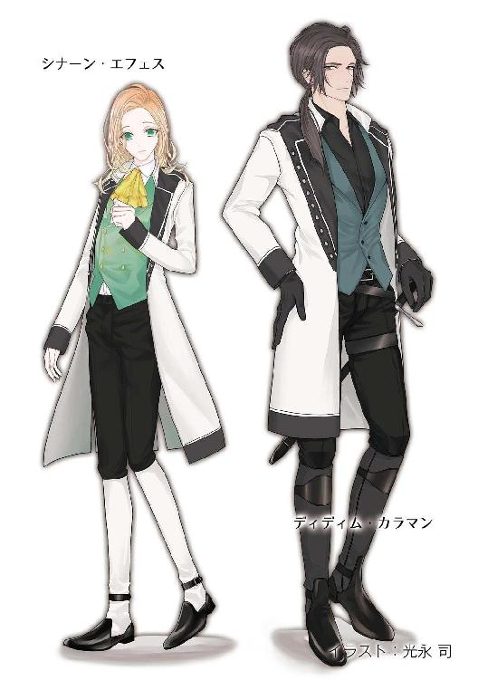

| 月哥伝 1巻 月KA伝シリーズ | |
| 御木 宏美 | |
| クリーク・アンド・リバー社 (2018) | |

月哥伝 １巻
～月KA伝シリーズ２～
御木 宏美
本作品の全部または一部を無断で複製、転載、配信、送信したり、ホームページ上に転載したりすることを禁止します。また、本作品の内容を無断で改変、改ざん等を行うことも禁止します。
本作品購入時にご承諾いただいた規約により、有償・無償にかかわらず本作品を第三者に譲渡することはできません。
本作品を示すサムネイルなどのイメージ画像は、再ダウンロード時に予告なく変更される場合があります。
本作品は縦書きでレイアウトされています。
また、ご覧になるリーディングシステムにより、表示の差が認められることがあります。
月哥伝
一章
１
月神シャーの化身アイヴァン・サナイに捧げた蒼翠の炎が、その聖なる像の足元にたたずむ少女と跪く三十余名の人々を照らしていた。
月の谷の山上城砦内にある聖殿。
少女はアイヴァン・サナイを始祖とするレイクトラ神王国第十七代神王アレグリナ・サナイこと観月瑠奈。ふた月前まで異世界──地球という惑星の古い都、京で暮していた。その前に跪いているのは瑠奈を唯一の神王位継承者と仰ぎ奉る十一使徒家の面々と、彼らに手を貸してきた豪商イスハク・パシャ。
瑠奈はこの世界へ己を連れ戻した七人の青年たちの一人で、一族を裏切ったエル・マル・クルの前に腰を落とした。
「オルターが捕まった時点でさっさと他国に逃亡すればよかったのに。彼がしゃべったらあなたも処刑されるのよ。なんでそうしなかったの」
女好みの甘い容貌に貴族でありながらどこか世慣れた雰囲気の青年は苦笑を浮かべた。
「そこまで卑怯者にはなれませんでした......」
瑠奈はひっそりと笑った。
「あなたも大ばかね。でも、ありがとう」
「聖下......？」
訝しげな眼差しに、瑠奈は首を横に振る。
「あなたたちがそう呼んでくれるほど、私はできた人間ではないわ。さっきは偉そうなことを言ったけど、本音を言えばオルターと同じ。見知らぬこの国の民なんてどうでもいいの。自分がひどい目に遭わずに、豊かに楽しく暮らせれば」
「聖下」
予想どおり、エル・マルとその背後に並んだ十一使徒家の面々のそこここから、戸惑いが返ってくる。
「そう、綺麗に楽しく暮らしたい。それだけよ」瑠奈は己に向かい礼をとっている貴族たちへ、自分がこの世界へ戻って来た理由を正直に吐露する。「民のためなんかじゃない、自分のためなの。自分勝手で、冷淡で、利己主義な人間よ」
「聖下......」
十一使徒家は四百七十二年前、アイヴァン・サナイとともに圧制をしく神王と戦い、ときの神王朝を討ち果たし、新たにサナイ朝を築いた十一人の傭兵の末裔である。その呼称が示すとおり、カレ、ビオス、カラマン、ムーラ、レザック、マン、セヴン、クル、カディ、エフェス、ミティーリの十一家は建朝以降、名門門閥として国政を牛耳ってきた。その面々に唯一の神王位継承者と奉られる少女は微苦笑を浮かべる。
「ナヴァール、十一使徒家、どちらが勝つにせよ、内乱で国力が落ちたこの国ではバイロンの侵攻を食い止められないかもしれない。その戦に負ければ、私もお母様のように惨殺される。勝っても、親兄弟を失った民や農地を荒らされて飢えた民は神王を恨むでしょうね。恨みは憎しみに変わり、武器を取らせる。先のディオクレティ朝しかり、地球にも民に討たれた王は大勢いるわ。そうなりたくない......」
女性たちが表情を曇らせた。
瑠奈の母、第十六代神王リレ・サナイは、アイヴァン・サナイをシャーの化身とは認めない者たちによって、十六年前、聖宮前の広場で生きたまま車裂きにされた。惨たらしい最期を迎えたリレは、当時まだ二十一。聡明にて慈愛深く、その麗しさと優しさは並び立つ者がなし。聖宮にまさに女神ありと謳われた存在だった。
その華の容貌を生き写しにし、異世界で育った少女は淡々と続ける。
「でも、いくら言っても十一使徒家はもう折れてはくれない。たとえ剣を握っても、私にはここにいる全員を殺す力なんてない。ナヴァールのもとへ逃げ帰る方法がない。だったらナヴァールを殺すしかないでしょ。それが全面戦争を避ける唯一の方法」
「聖下......」
自身の行為によって状況を複雑にした青年は苦しげに表情を歪める。瑠奈は苦笑を深めた。
「一度、貧しさの中に落ちてしまうと、這い上がるのは本当に難しい。我が身を削り、プライドを捨て......」
ふた月前まで、瑠奈も児童養護施設で暮していた。身寄りも金もない少女が持てる未来の可能性はごくわずかだった。
一度視線を落とし、瑠奈は再び、自分を見つめる青年をまっすぐに見返す。
「その辛さを私は知っているから。あんな思いをする子を増やしちゃいけない」
民のために裏切ったと言った青年の双眸が揺れる。瑠奈は淡く微笑った。
「利己主義でもそれぐらいの分別はあるわ。そして、それが自分の豊かな未来にも繋がる」
「............」
「もう施設は、いや。戦は、いや。それが回避できるなら、どんな汚いことでも私はやるわ──これでいい？」
裏切り者は感極まったように低く呟いた。
「神王聖下......」次の瞬間、エル・マルは居住まいを正し、深く頭を下げた。「我が命、我が忠誠、御身に捧げ奉る！」
空気が動いた。同じように、十一使徒家の者たちが改めて畏まる。
瑠奈は頷き、腰を上げた。
居並ぶ跪いた家臣たちを見渡す。十一使徒家の当主たち、その夫人、瑠奈を異世界から連れ帰った青年たち、二つの世界をつなぐ十二宮まで出迎えに来た三人の女性、そして末席に並ぶ豪商のイスハク・パシャ。全員が粛然と頭を垂れている。
少女の瞳に鋭い光が宿った。
礼をとっている者たちはその変化に気づかない。
「では──和議を受け入れると見せかけて、ナヴァールを消すことに同意してくれるのね」
「御意」
リレの宮廷で大法官を務めたルドウィック・セヴンが、十一使徒家を代表して厳かに答える。
「そう」
瑠奈は十一使徒家の当主たちを見据えた。
「だったら交換条件よ」
自分に忠誠を誓ってくれている者たちに目を向けたまま腰を落とし、少女は先刻、迎えに来た青年たちの一人、ダカーン・マンに渡した剣を再び手に取った。
「......？」
スキンヘッドの大男は跪いたまま訝しげに目線だけを上げた。
次の瞬間、
「なにを......!?」
我が身がどれほどの危険にさらされても決して動じなかった男がただならぬ声を発した。
その声にほかの者たちも顔と視線を上げる。
全員が目を見開いた。
「聖下っ!?」
「なにをなされます、アレグリナ様......!?」
少女は冷たく光る剣身を、自身のその細い首に向けていた。
「聖下っ！」
ダカーン同様、瑠奈を迎えに異世界へ渡ったギルネ・セヴン、ロドス・カレ、ディディム・カラマンと、十二宮へ出迎えに来た三人の女性のうちの一人リプシマ・ムーラ、四人の従騎士が反射的に立ち上がった。エル・マルも罪人の立場を忘れて思わず腰を上げる。
切れ味鋭い剣を首筋に押し当て少女は硬い表情で口を開いた。
「エル・マルを罰しないと約束して」
名の挙がった当人は目を見開く。
「聖下......」
「もう一つ」人々を見据えながら瑠奈は強い口調で続ける。「オルターを今すぐ牢から出して。でなければ私はここで死ぬわ」
「アレグリナ様!?」
「ばかなまねはおやめくださいっ、聖下！」
ギルネとディディムが手を伸ばす。
「来ないで！」
手入れの行き届いた剣を首筋に押し当てたまま瑠奈はあとずさった。
従騎士たちは踏み出した足をその場で止める。
驚愕に凝然と固まっている当主たちに向かって瑠奈は早口で言った。
「さっきエル・マルが言ったように、あなたたちの本心は、私を神王にして再び自分たちが政治の実権を握りたい、そこでしょう？」
当主たちは互いに目を見合わせる。
そのとおりであったが、いずれも老練の古狸。アレグリナがとった行動には驚いたが、ここで動揺を見せる者はない。
「好きにするといいわ。人事には口をはさまない。政権を取り戻したあとも私は常にあなたたちの側につく。でも、オルターは地球へ帰して！」
「聖下......」
「この条件だけは譲れない！ 二人を無罪に！ オルターを今すぐ牢から出して！」
「............」
当主たちは互いに顔を見合わせた。
ギルネが当主らに目を向けた。切れ長の双眸が、どうします、と問う。
当主らは顔をしかめた。
利己主義を自ら公言する少女が自害などするはずがない。これは難題を通さんがための、見せかけの威しだ。それは誰しもわかっていたが、その要求だけは聞き入れるわけにはいかない。エル・マルとオルター・レザックが犯した罪は死罪に値する。
特にそれぞれの父親、ラハン・クルとウォレス・レザックは苦悩が深い。
返事がないのは否だと判断して、ギルネは湖水のような冷たい碧眼をディディムに向けた。剣を奪えるか、と目で問う。
無理だ。月の谷一の剣豪も眼差しだけで答える。
彼我の距離はわずかに数歩。跳びかかればひと跳びで届く。しかし剣を握っている少女は武道の指南を受けたことがない。驚いたはずみで無意識に手を動かしてしまい、逆にその首を傷つけてしまう可能性がある。
それでもディディムは、アレグリナには気づかれないようにさりげなく片手を腰の後ろに回し、足元にいるエスキル・カディに指で合図を送った。
その動きは若者の視界に入ったが、こちらもアレグリナに気づかれないよう、エスキルは一切の反応をみせない。しかしディディムが合図を送る前から、女のような容貌に豹のごとき俊敏でしなやかな細身の若者は、すでに跳びかかるタイミングをうかがっている。
二人はわずかな隙に狙いを定め、少女を見つめる。
少しでいいから剣がその首から離れれば。
しかし騎士たちの思惑を予想してか、アレグリナは冷たい剣身をぴたりと首にあてたまま。
息づまるような緊張感をはらんで、凍りついた時が流れる。
突然、当主の一群の中から女の笑い声があがった。
ディディムとエスキルは少女がそれに気を取られることに期待した。
だが瑠奈は微動だにしない。逆にその笑い声に反応したのは、当主たちのほうだった。
当主たちは一斉に、一群のほぼ中心にいる、その笑った人物を睨みつけた。
十一使徒家の中で唯一の女当主、フランツェ・カディ。氷の美貌を持つ女は非難の視線を一身に浴びながら泰然と言った。
「どうやら聖下のほうが一枚上手のようですわね」
当主たちはため息を落とした。
ルドウィック・セヴンがいたしかたないという表情で息子のギルネに向かって首を縦に振った。
ギルネはわずかに眉をひそめた。セヴンが眼差しでなにごとか答える。
ギルネは頷いた。それから彼は軽く息を落とし、アレグリナを見やった。
「わかりました、聖下。仰せのとおりにいたします。ですからその剣をこちらへ」
「いやよ」瑠奈は厳しい顔つきで即答した。「オルターをここに連れて来て」
ギルネの眉間の溝が深まる。
瑠奈は険しい眼差しで当主らを見据えながら言を重ねる。
「言っておくけど、とりあえずこの場は口先だけの返事で切り抜け、私の身柄を確保してから二人に自決を迫ろうなんて考えは無駄よ。病死であれ、自殺であれ、二人が死んだら、私は絶対あなたたちに味方しない！」
当主らと従騎士はその言葉に呆気にとられた。内容に驚いたのではなく、まだ十七、しかも本来なら世間など知らない深窓の姫君であるはずの少女が、そこまで考えを巡らせていることにである。
ただ一人、フランツェだけがさもおかしそうに再び肩を揺らす。
「すっかり読まれていますわね」
当主らは気まずげに顔をそらし、渋面を浮かべた。
瑠奈は鋭く声を張りあげた。
「二人を無罪にして！ あなたたちの未来と引き換えよ！」
当主たちは顔を見合わせた。
「......わかりました、聖下」
ルドウィック・セヴンが答えた。
「しかし......！」
ラハン・クルとウォレス・レザックは渋る。
だが両名ともそれ以上は言葉が続かない。当主として一度は我が子の処罰を受け入れながらも、親心まで捨て切れてはいない。
その苦悩はほかの当主たちも痛いほどよくわかっていた。全員が子を持つ親であり、十六年前の凶事のおりに我が子を失う痛みを味わっている。
心情を察したフランツェが再び口を開いた。
「アレグリナ様を神王位におつけいたし、政権を我らが手に取り戻すことができれば、それでよろしいのではございませんか？」
「だが」
苦々しく答える男たちに対して、氷の麗人は薄く笑う。
「そもそも戦による多大な犠牲を覚悟していた我ら。それが回避できるなら逆に儲けものと言えましょう。それはエル・マルとオルターの裏切りがあればこそ」
「それは結果論だ」
「そう、それでは筋道が立たぬ」
レザック夫人ドナヘが後方から声を発した。
「聖下が罪に問わぬとおっしゃっているのですから、もうよろしいではありませんか」
「そなたは黙っていろ」
レザックが肩越しに妻を咎める。ドナヘは肩をそびやかした。
「畏れながら」彼女の隣にいるシグリ・エフェスが張りつめた表情で床に手をつき、細い声を絞り出した。「わたくしからもお願いを。どうか両名を放免くださいませ」
「あたくしからも」
十二宮へ出迎えに参じた一人、ガラジェ・ビオスが同じように手をつき頭を下げる。
リプシマが無言のまま腰に帯びた剣を外し、膝を折った。
「わたくしもっ」
最年少のファチャ・ミティーリまでが嘆願の列に加わる。
さらに、シナーン・エフェス。
当主たちは渋面を深めた。
成り行きを見守っていたロドスとディディムが顔を見合わせた。
どうやら思いは同じ──武将たちは互いの意を確認して頷き合う。
ロドスが当主たちに向かって口を開いた。
「聖宮を取り戻せたら、アレグリナ様のご即位を祝して恩赦という形で二人を無罪に。それまでは両名とも監視下に置く。それでどうですか？」
当主たちは顔を見合わせた。
ラハン・クルとウォレス・レザックは視線を落とす。二人にはなにも言えない。
十六年前、旧派と呼ばれる、サナイ朝の始祖アイヴァン・サナイを神の化身とは認めない反勢力が起こした反乱。その反乱を操っていたのは、ときの神王リレの聖夫ナヴァール・セイティンブルヌだった。しかしそれがわかった時には、十一使徒家は建国以来、四百六十年にわたって握ってきた政権と、一族の半数以上を失っていた。
リレに代わって神王位についたナヴァールの粛清を逃れ、十一使徒家は住み慣れた聖都を落ちた。険峻な山脈に護られた月の谷にこもり、ひそかに聖宮奪還の計画を進め──十六年。言葉で表すのは簡単だが、現実にはどれほど困難で長い道のりであったか。
凶事のおり異世界へと逃がれ行方不明となったリレの一子、アレグリナを捜し出し、ようやく彼女を旗頭に蜂起の御旗を揚げ、悲願を叶えんとした矢先──まさか一族から裏切り者が出ようとは。
よりによってその裏切り者は当主の実の息子ときた。アレグリナの帰還をナヴァールに漏らし、その身柄を引き渡す策略を立てたエル・マル・クルと、それを手伝ったオルター・レザック。
二人によって聖宮へ連れて行かれたアレグリナを取り戻す過程で、十一使徒家は七十余の兵を失った。負傷者は二百以上にのぼる。損害は決して小さくない。
親心では、我が子に死を命じるのは、我が身を斬られるより辛い。されど当主としての道義的責任を鑑みれば、いかほど辛かろうと、免罪は断じて口に出せない。
残りの当主たちは、立場と親心の二つを抱えた二人の苦悩を察していた。
唇を引き結び険しい顔つきで、視線はただ冷たい石床を見つめている両名の背中越しに、当主たちは目を見交わす。そして頷いた。
「......よかろう」
ルドウィック・セヴンが代表してロドスに答えた。
シグリとガラジェ、リプシマ、シナーン、ファチャの顔に安堵の色が浮かぶ。
ラハン・クルとウォレス・レザックが無言のまま深く頭を下げた。
ロドスはギルネに視線を向けた。
「それでいいな？」
「............」
問われたギルネは眉の間に微かに溝を刻んだ。そして、ちらり、とアレグリナを見やる。
いまだ険しい顔つきで剣を握っている少女を見つめ──ギルネは無言で首を縦に振った。
ロドスはディディムと目を見合わせ、二人とも頷いた。
ロドスが瑠奈に向かい、口を開いた。
「お聞きになられたとおりです。お望みのとおりとはいきませんが、あの地下牢に比べたらはるかにましな部屋に移し、まともな食事を与え、傷の手当てもいたします──それでいかがですか？」
しかしアレグリナは険しい表情を崩さない。剣はその位置から一ミリも動かない。シャーが地上の人々に与えてくれた恵みの色、明翠の瞳は疑り深い眼差しで十一使徒家を睨みつけている。
ロドスは苦笑を浮かべた。
「お信じいただけませんか」
「............」
「まあ、これまでの経緯からすればそれも当然といえますがな」
他人事のように言って、ロドスは無精ひげの浮いた顎を撫でる。
「アレグリナ様......」
ファチャが気遣わしげに大きな瞳を揺らす。
本当に信じていいのか、瑠奈は迷っていた。
十一使徒家は自分たちの都合がいいようにしか話さない。人間というのは誰でもそうだ。
内心の動揺を映して揺れ動いた視線がギルネのそれと合った。
湖水のような双眸は常日頃と同じ、冷たく無機質。考えが読みとれない。
「............」
瑠奈は惑う。
ロドスたちは黙って瑠奈の返事を待っている。
決めかねて、少女は一人の女性に目を向けた。この中でただ一人、瑠奈にもう一つの事実を教えてくれたその女は、その氷のような美貌の口元に微かに笑みを浮かべ、ゆっくりと首を縦に振った。
「............」
瑠奈は軽く息をついた。
「......わかったわ。それでいい......」
剣を下ろす。
当主たちが大きく息をついた。シグリ、ガラジェ、リプシマも緊張を解き、ほっと安堵の息をこぼす。
ロドスが破顔した。ディディムも微笑を浮かべる。
瑠奈は視線を落とした。
ギルネが歩み寄り、剣へ手を差し出す。瑠奈は素直に渡した。ギルネはそれをダカーンへ戻しにいく。
自身の無用心からアレグリナに剣をとらせてしまった大男は一連のやりとりの間中、強張った表情で跪いていた。ギルネが剣を差し出してもまったく動かない。唇を引き結び、視線は冷たい石床の一点を凝視している。
エスキルが代わりに鞘に戻す。それが足元に置かれても、ダカーンは畏まったまま。
ロドスとディディムが苦笑をこぼす。瑠奈も気づいて、戻って来たギルネを上目遣いに見上げた。
「......処罰しちゃいやよ？」
「わかっております」
ギルネは冷淡そうな容貌そのままの冷えた声で答える。
瑠奈は大男に歩み寄り、その前に腰を落とした。
「ごめんね、ダカーン。あなたに落ち度は全然ないから」
「まったくだ」ロドスが朗らかに相槌を打つ。「まさかあそこで聖下がああいう行動に出られるとは。いや、あれは誰も予想できない」
「同感です」ギルネがため息をつきながら瑠奈を睨む。「お命を交渉の道具にして家臣を脅すなど、神王聖下のなさることではありません。無作法が過ぎます」
瑠奈は微苦笑を浮かべた。そして広くぶ厚い肩にそっと手を置く。
「だから気にしないで。ね？」
ダカーンは無言で粛々と頭を下げた。しかし太い眉の間には深い溝が刻まれたまま。見かけは悪党でも恐れるような巨漢だが、忠義心と信仰心は人一倍厚い。
それを知っているロドスとディディムが再び苦笑をこぼす。
二人は立ち上がる瑠奈に手を貸した。
「礼を申しあげます、聖下」
差し出された二つの手にそれぞれ手を重ねながら、なにに、と瑠奈は見上げる。
オルターとエル・マルの命を救ってくれたことに。
武将たちの目はそう言っていた。
ガラジェとリプシマの顔にも微笑が浮かぶ。
瑠奈はエル・マルに目を向けた。
裏切り者は少し目尻の垂れた双眸を眇め、じっと瑠奈を見つめていた。
甘めのマスクは人を惹きつけるものを持っている。顔立ちがよいのはギルネもエスキルもだが、冷淡な印象の二人に対して、エル・マルは世慣れたふうで感じがいい。
心の中を見透かされそうで、瑠奈は目を伏せた。
エル・マルの表情がふと歪む。そして裏切り者は片手を腰の前に当てて、少女に向かい深く頭を下げた。
２
地下牢へと下る狭く急な階段の石壁に人影が揺らめく。
待ち受ける瑠奈、ウォレス・レザック、ラハン・クル、ギルネ、ディディム、エスキル、ガラジェ、リプシマ、そしてエル・マルのもとへ、ダカーンに抱えられたオルターが上って来た。松明を持ったロドスが二人を先導している。
謁見に訪れた諸侯たちの目につかぬように、新たな牢への移送は夜が更けてから行われた。ほかの当主たちとウォレスの妻ドナヘはすでにそれぞれの屋敷へ引き揚げている。見張りや護衛の兵士の姿もない。ロドスとダカーンの二人が自ら地下へ下りて連れて来た。
瑠奈は人垣の一番後ろで待っていた。
陽も射さぬ洞窟のような岩の牢に投獄されていた男は数日前に目にした時よりさらに弱っていた。げっそりとそげた頬、伸び放題の無精ひげ。足取りはおぼつかない。ダカーンが抱えていなければ、そのままくずおれてしまいそうだ。ボタンがちぎれ、血と汗と泥で汚れたシャツだけがあの時のまま。
傷だらけの胸元で翠色のターコイズのペンダントが揺れている。
瑠奈は絹のドレスの胸元を握り締めた。
悲惨な姿に胸が痛んだ。けれど同時に胸の奥から甘酸っぱい感情が沸々とこみ上げてくる。そこにはなぜかその姿を目にして歓喜を覚える自分がいた。いや、むしろ痛みより喜びのほうが大きい。
その人の姿を、一挙一動を、食い入るように追う。
我知らず、一歩を踏み出していた。
その腕をつかむ者があった。瑠奈は驚き、振り仰いだ。
「これ以上はだめです」
二の腕を握ったギルネが冷えた声で告げた。
「どうしてっ？」
だが冷たい容貌は無表情に黙したままなにも答えない。
前にいるガラジェが振り返った。
「牢内は不衛生ですから、万が一、オルターが病にかかりでもしていたら......。貴き御身を危険にさらすわけにはまいりません」
「でも......」
揺れる瞳にガラジェは困ったように少し苦笑を浮かべる。しかし彼女は毅然と言った。
「身体を洗って傷の手当てをいたし、食事と休養を充分に摂らせますゆえ」
同じようにリプシマが振り返り、頷く。
瑠奈は胸元で手を握り締めた。
オルターが最後の石段をゆっくりと上がった。
ロドスが手にした松明と壁に灯された蝋燭の光が待ち受けている人々をほの暗く照らす。
ダカーンに抱えられたまま傷ついた男は顎を上げた。灰色の瞳がエル・マルを映す。
「ばか野郎が......」男は肩を上下させながらも苦笑含みに掠れた声を絞り出した。「黙ってりゃいいのに」
両手首に木の手枷をかけられているエル・マルは苦笑を浮かべた。
「おまえを見殺しにしたら、俺はあの世で、おまえの母上やグランダディに顔向けできない......」
オルターは顔を伏せ、ひっそりと笑みをこぼした。それからほんの少し背筋を伸ばし、ウォレス・レザックに向かって頭を下げた。
「すみません......」
石段の底にその姿が見えたときからレザックはずっと息子を見つめていた。
端整な顔には深い苦悩が浮かんでいる。
オルターは、彼が妻ドナヘの侍女との間に儲けた庶子だ。気が強く人一倍気位の高いドナヘは当然、快く思っていない。母親が死んで手元に引き取ったあと、彼女は継子に罵倒を浴びせ続けた。
十六年前の凶事で、自分が産んだ四人の子のうち三人が死亡や行方不明となり、オルターだけが月の谷のレザック邸に戻って来てからは、その虐待は一段と激しさを増した。まだ十三歳だった息子はそれに耐えかね、館を飛び出した。
以来、会うのは十四年ぶり。記憶にある面影と同じなのは、母親譲りの赤毛だけだった。飛び出した時、まだ半分子供だった息子は一人前の男に成長していた。その変容に、ウォレス・レザックは流れた時間の長さを改めて噛み締める。
己のひと時のたわむれが、一人の人間の人生に深い影を落としてしまった。生まれながらにして、苦労を背負わせてしまった息子。我が子でありながら、護ってやれなかった自責の念が、息子の犯した罪の重さとともに苦く胸に押し寄せる。
その罪は、己の罪だ。
「......アレグリナ聖下にお礼を申しあげろ。おまえが出られたのは、聖下のおかげだ」
オルターは待ち受ける面々に視線を走らせた。
人垣の後方に絹の豪奢なドレスを身につけた美しい少女を見つけ、淡く笑みを浮かべる。
瑠奈は唇を噛み締めた。
駆け出せばほんの数歩でたどり着く距離。けれど人垣に阻まれて、その距離が遠い。
ロドスとダカーンとエスキルに監視され、オルターとエル・マルは別の牢へと連行されて行く。目の前を通り過ぎるその人を、瑠奈は見つめた。
ダカーンの巨体の陰になったオルターはもう瑠奈のほうへ顔も視線を向けてこない。代わりにあとに続くエル・マルが振り向き、静かに頭を下げた。
瑠奈は胸元を握り締める。
胸が痛い。
近づかないように二の腕をつかんでいるギルネの指が、無性に腹立たしかった。
３
エル・マルの裏切りが発覚してから二日後の深夜。
ナヴァールの殺害方法を話し合うために、ギルネ、ロドス、ディディム、リプシマが山上城砦の主館にある瑠奈の部屋へやって来た。
ことがことだけに聖宮に洩れてはならない。それゆえに計画を知っているのは、瑠奈が聖殿へ呼び寄せた三十人足らずのみ。それ以外の者には家族であろうとも決して口外してはならぬと緘口令が敷かれている。
四人の従騎士は夜が更けるのを待って、人目を避けるようにやって来た。これに宿直を務めるガラジェ。常に二人いる下仕えの小間使いは今夜は退がらせ、廊下にはダカーンが見張りに立っている。
暖炉の中でパチパチと音を立てて揺らめく炎が、その前に集まった者たちを赤く照らしていた。密談にふさわしく、室内は闇が濃い。
「すでにフランツェ殿がナヴァール公に宛てた密書が聖宮に届いているはずです」
抑えた声でロドスが告げる。
「もう？」
聞いた瑠奈は驚く。
フランツェの密書はナヴァールが彼女を通じて密かに瑠奈に寄越した親書の返事だった。十一使徒家を説得して和議を受け入れさせるので、講和の条件として十一使徒家の復朝を確約する旨を記した文書の調印式を諸侯列席のもとで行うことを望むと記されている。エル・マルの裏切りが発覚したその日のうちにフランツェが代筆し、聖都へ早馬を送った。
「聖宮を脱出してここまで来た時は、ほとんど休憩をとらずに馬車で走り続けて、丸五昼夜かかったわ」
「こちらには電話という便利なものはありませんが、代わりに駅逓という連絡網がありましてね」
異世界で育った少女のためにロドスは説明する。
ロドス、ディディム、ギルネ、ガラジェ、リプシマと、ダカーン、オルター、エル・マル、エスキル、シナーンは、十六年前の凶事のおり、アレグリナとともに異世界へ送られ、二年間をかの地で暮した。瑠奈を迎えに行ったロドス、ディディム、ギルネら男性陣は、二ヵ月前にもひと月。彼らは瑠奈が育った世界の暮らしがどういうものかを知っている。
「街道沿いに、一定の距離をあけて村があったでしょう。あれは人が勝手にそこに住み着いてできたものではなく、国が意図して一定数の農民を住まわせたものでしてね。村には早駆けできる乗馬用の馬が最低一頭は必ず配置されています。村の男は十五を過ぎたら交代で番につくべしと法律で定められていて、昼夜を問わず常に一人が早駆けに備え待機しています。そして急ぎの手紙や報せがあれば、夜中だろうが、全力で馬を走らせ、受け取った荷を次の村へ届ける。これが駅逓です。この連絡網は聖都を中心にして、主な街道に整備されています。駅逓を使えば、聖都から峡谷の入口まで、我々が四日をかけた道のりも一日半でつく」
村と村の距離はおよそ五キロ。
「何十頭もの馬と騎手を乗り継いで、報せを急ぎ届けるのね」
瑠奈の相槌に、そうです、と答えたのはギルネ。
「こちらではどこの国でも同じような連絡網を敷いていますが、我が国は特に整備が進んでいます。それもレイクトラがトスカナ一豊かな国だからこそできる業」
駅逓が置かれた村には、国からいくばくかの給金が支払われている。
ビロードを張った一人掛けの椅子に腰かけた瑠奈は肘かけに頬杖をついた。
「......ナヴァールはもう密書を読んだかしら......」
「おそらくは」
「じゃあエル・マルの手紙のほうも近々聖宮に届くわね」
「あちらは通常の早馬ですから。でもまあ、明後日か、遅くても明々後日には」
その手紙はアレグリナを取り戻した十一使徒家の現状をナヴァールに報せる形で、反旗の旗頭になるべき肝心のその少女が戦を嫌がり、聖宮からの和議の申し出を受け入れるよう主張して十一使徒家と対立している。厳重な警護がついているアレグリナを月の谷から連れ出すのは不可能だが、内乱の回避に向けて彼女を動かすと記した。先に届いた瑠奈からの講和の申し出に信憑性を持たせるのが狙いだった。
瑠奈は微苦笑をこぼした。
「エル・マルったら、私が、和議を受け入れなければ自殺すると当主たちを脅して、聞き入れられないとわかると、今度はハンストを決行中って書くのよ」
「そのとおりでしたが」
ギルネがちらりと睨んで皮肉っぽく答える。瑠奈は肩をすくめた。
「でもハンストなんて書かれたらダイエットしなきゃまずいじゃないの」
ガラジェがため息をつきながら首を横に振った。
「充分に細うございますわ」
リプシマも微笑いながら頷く。
瑠奈はもう一度軽く肩をすぼめ、椅子の背もたれに沈んだ。
「......ナヴァールはどう判断するかしらね......」
「エル・マルの密書が吉と出るか凶と出るかですな」
ロドスが他人ごとのように答える。
ギルネが口を開いた。
「バイロンとの情勢を考えれば、調印式は向こうにとっても有益な申し出ですから確実に受諾するはずです。あとは我々の始末をどうつけるか」
「ギルネ」
アレグリナ様の前で血腥い話はおやめ、とガラジェが目で叱る。
「いいのよ、ガラジェ」瑠奈は背もたれから上体を起こし、背筋を伸ばした。「要はナヴァールを調印式に引っ張り出せたら」
ギルネ、ロドス、ディディム、リプシマが頷く。
「ご要望のものをお持ちしました」
ディディムが大小二つの物体を瑠奈の近くの小さなテーブルに置いた。
瑠奈は大きいほうを手に取った。
スミスアンドウェッソンＭ４５９──オルターが身につけていたものだ。
「危のうございますわ」
ガラジェが慌てて口を出す。
「大丈夫だ」ディディムが答えた。「発射しないようにしてある」
サムセフティがロック状態にある。
瑠奈は両手で構えてみた。想像していたほどには重くない。片手でも保持できる。
引き鉄に指をかけた。十四連弾倉の太いグリップは、握るとちょうど人差し指の第一関節から先がかかる。
見守っていたディディムが苦笑をこぼした。
「無理ですね。それでは引き鉄を引けません」
壁に向けて両手で構えたまま瑠奈は上目遣いに精悍な男を見上げた。
「届いてるわよ？」
「両手で持っていたら間に合いません。片手だけで撃たなければ。それにはもっと深くまで指がかからないと」
ディディムは瑠奈から受け取って、自分がやってみせた。第二関節までが楽に引き鉄にかかっている。
グリップが太すぎるのだ。オルターやディディムのように長身の男でなければ扱えない。
瑠奈に返しながらディディムは続ける。
「これは発射時の反動もかなりなものです。聖下のお力では片手での制御は不可能でしょう。逆に手首や指を痛めかねません。ましてや連射は」
さすがに武将だけある。こちらの人間は自動装填式拳銃などまだ見たこともない代物だが、向こうで育った瑠奈より知っている。
「じゃあ、やはりこちらかしら」
瑠奈はもう一挺を手に取った。
ジュニアコルト。全長は瑠奈の手よりも短いポケットピストルで、グリップはスミスアンドウェッソンより薄く、引き鉄に楽に指がかかる。重量も半分くらい。
「そうですな」ロドスが無精ひげを生やした割れ顎を撫でながら相槌を打つ。「問題は、それをどうやって気づかれずに調印式の場に持ち込むか、ですが」
「エスキルがしていたように、太ももにつけるわ」重量と握った感触を確かめながら瑠奈は答える。「すぐに取り出せるようにドレスのスカートに穴を開けるかなにかして。それは意匠しだいでどうにでもなる」
「なるほど」
ロドスはあっさりとした口調で答えて、また顎を撫でる。
リプシマがその顔を横目でちらっと見た。視線に気づいたロドスが同じように見返す。目と目での会話ののち、腰に剣を下げた女性はディディムに訊ねた。
「一発で致命傷を与えられる？」
「頭か心臓に当たればな」
ディディムは硬い声で答えた。リプシマの表情が締まる。
「胴でも動きを数瞬止めるぐらいはできるだろう」
「そう......」
「それよりも──」
言ってディディムは瑠奈を見た。ロドスとリプシマの視線も集まる。
「なに？」
「撃てますか？」
ディディムが訊ねた。
「なあに？ 撃てるわよ？」
ディディムが硬い口調で続ける。
「空き缶を狙って引き鉄を引くのとはわけが違います。標的は人間です」
「平気よ」
グリップを握ったまま瑠奈は即答した。
騎士たちは失笑をこぼす。
胸の奥にくすぶる不安と恐怖を抑え、瑠奈は手の中の鋼鉄の塊を見つめた。
ナヴァールを殺せば内乱は回避できる。
自分のため、国のため、そして彼のため──どれをとっても、それが最良だ。
ガラジェが横からふくよかな手を差し出した。
「いくら弾が出ないと申しても、万が一ということがございます」
「ええ......」
瑠奈は素直に渡した。ガラジェはそれをディディムに戻す。
「まあ、詳細をつめるのは調印式の場所と現場の状況がわかってからですな」
ロドスがおおらかに言った。
「そうね......」
瑠奈は背もたれにもたれこんだ。
暖炉に目をやる。
上等の太い薪と一緒に、白い樹皮の高価な香木が燃えている。もう夜は冷え込みがかなり厳しくなっていたが、この部屋は大きな暖炉と香木のおかげで、いつも暖かくよい香りがする。
「......二人はどうしてる......？」
五人はそっと目を見合わせた。
「ご心配はご無用でございますよ。元気ですから」
ガラジェが答える。
瑠奈は下唇を軽く噛んだ。
オルターとエル・マルはこの主館とは別の山砦、当主たちが政務に用いている部屋や本営がある西の棟の一角に勾留されている。側仕えの女たちやギルネに様子を見に行きたいと何度も言ったが、返事はいつも否だった。
「元気だったら会っても問題ないでしょう？ どうして会わせてくれないの？」
「それは......」
ガラジェは困ったように言葉尻を濁し、ちらっとギルネを見た。ロドスとディディムは気まずげな様子で、揃って明後日の方角へ視線をそらす。
瑠奈は秀麗な顔を睨みつけた。
「答えて、ギルネ」
暖かい暖炉のそばに立っていた青年は双眸を眇め冷たく答えた。
「お知りになる必要はございません」
瑠奈は自嘲を浮かべた。
「そう言うと思ったわ」
少女は視線を落とす。神王聖下と呼ばれても、実態は籠の鳥だ。
「アレグリナ様......」
誰かの手が肩にそっと置かれた。視線を上げた瑠奈の目に、灰金色の髪に縁取られた綺麗な顔が映る。その顔には微かに憂いが浮かんでいた。
同じように足の上で組んだ手にガラジェの温かい手が重ねられた。
「晴れて自由の身になったら、オルターはおそらくあちらの世界へ戻りましょう。なまじお心を通わされぬほうがよろしいですわ。些細な間柄でも、今生での別れとなれば辛うございます」
床に膝をついて上目遣いにのぞき込みながら優しげに諭すガラジェの言葉に、瑠奈は唇を噛み締めた。
「......彼がそう言ったの？ 戻るって......」
一呼吸間を置き、ガラジェは首を縦に振った。
瑠奈は赤々と燃え盛る暖炉へ視線をそらした。
「......あなたたちはいくつだったの......？」
「向こうへ渡った齢ですか？」
「ええ」
五人は顔を見合わせた。
「俺とガラジェは十四でしたな」
ロドスが答えた。ガラジェが頷き、剣を身につけた男女に目を向ける。
「ディディムとリプシマは十二」
ディディムが微笑をこぼし、続けた。
「オルターとダカーンが十一で、ギルネは──」
「九歳でした」
当人が答える。続いてリプシマ。
「エル・マルが八つで、ファチャの姉のティアは五歳、エスキルはまだほんの三つ」
最後にもう一度ガラジェが腰を上げながら言った。
「シナーンにいたっては二つにもなっていなかったわね」
瑠奈は五人を見回した。そこにいる青年たちの姿に、ワイオミングの牧場で見た写真の子供たちが重なる。
「......今の私よりみんな幼かったのね......」
ギルネを除く四人は苦笑を浮かべた。
ガラジェが丸い腰に手を当てながら言った。
「ええ、そりゃ最初は苦労しましたわ。あたくしたちにはアレグリナ様のようなお力がありませんので、ダンやメアリーがなにを言っているのかもわからず。おまけにあちらでは身の回りの世話をする乳母も召使いもいない庶民の暮らしでしょう？ 戸惑うことばかりでした」
「最初に馴染んだのはオルターだったな」
「ロドス」
ギルネが冷えた声を発した。ディディムが横からたしなめる。
「その程度なら障りなかろう」
ギルネは軽く舌を打った。そして青年は腕を組み、憮然とした表情で背後の暖炉にもたれる。
ロドスは軽く笑い、周りを囲んだ騎士たちを上目遣いに見回している少女に目線を合わせ、再び口を開いた。
「オルターの出自と、どうしてレザック邸を出て向こうに戻ったか、そこんところの事情はあいつから──」
瑠奈は首を縦に振った。
「聞いてる」
「そうですか」豪胆な男は一つ頷き、その無骨な外見に人のよさそうな笑みを浮かべておおらかな声で言った。「まだなにもわからなかったちびすけどもは置いといて、ガラジェが言ったとおり、俺たちには庶民の暮らしってやつは、あの時が初めてでしてね。おまけにいつ戻れるのか、はたして本当に帰れるのかすらわからなかった。まあ、それはオルターも同じでしたけど。あいつもこちらではレザック家の子息として貴族の暮らしを送っていましたから。けれど、あいつはあのことが起こる前にすでに母親を亡くしていて、引き取られた先のレザック家で不遇の扱いを受けていましたから、俺たちほどにはこちらに執着心がなかったのかもしれませんな。最初にあの家の者たちの手伝いを始めた。ダンや、当時まだ生きていたその父親のあとについて、家畜の世話、大工仕事、畑や果樹園の収穫」
ディディムが微笑を浮かべながら続けた。
「言葉の習得も早いほうだったな」
「そう。ちなみに手伝いもしなけりゃ、わかっているくせに最後まで向こうの言葉を使おうとしなかったのが、そこにいる誰かさんですけどね」
瑠奈はくすりと笑った。
「でしょうね」
ギルネは憮然としている。ロドス、ディディム、ガラジェ、リプシマも笑う。
ガラジェが自身の絹のドレスを見下ろしながら、しみじみとした口調で言った。
「身分や財産には執着しない、見かけや地位で人を判断することもない、人間がまっすぐで優しい子なんですよ」ふくよかな肩をすくめて微苦笑する。「あたくしたちなんて曲がりきっていますけど」
その一人の瑠奈は喉元を軽く押さえた。
ガラジェは大きなため息を落とした。
「せめてレザック卿が、ドナヘ殿やほかの子供たちの前でもっと毅然と、オルターへの愛情を示してやってくれていれば──まったく男なんて、外では偉そうにしていても、奥向きのこととなるとからっきし及び腰なんだから。自分の女子供を幸せにしてやれなくて、なにが役目よ」
ロドスとディディムが目を見合わせた。
「なんだか雲行きが怪しくなってきたぞ」
「雷に撃たれる前に部屋に引き揚げるか」
ガラジェが冷たい一瞥をくれる。
「なにか思い当たる節でもおあり、ディディム？」
「............」
名指しされた男は気まずげに視線をそらした。リプシマがひっそりと苦笑をこぼす。
ガラジェはふんと鼻を鳴らし、腰をかがめて瑠奈の手の上にそっと手を置いた。
「畏れながら──オルターはお二人だけで旅をされた間、無体なことはなにもしていないと申しておりますが......」
ギルネが腕組みを解き、暖炉から身体を起こした。ロドス、ディディム、リプシマの注目も集まる。
「ええ」瑠奈は即答した。「なにもなかったわ」
「まことでございますか......？」
ガラジェは目をのぞき込みながら問う。
「本当よ」瑠奈はきっぱりと答えた。「彼は紳士的だった」
ガラジェは身体を起こし、ギルネやロドスたちと顔を見合わせた。
「なあに？ もしかしてあなたたちは私が彼のことを好きだと思っているの？」
五方向から注がれる疑惑の眼差しがその質問を肯定する。
瑠奈は苦笑いを浮かべた。
「やめてよね。そんなんじゃないって前にも言ったでしょう。だいいち私にも相手を選ぶ権利があるわよ」
「ではなぜ」ギルネが問う。「なぜ、あやつの身柄にこだわるのです」
瑠奈は視線を落とした。
「......私を気遣ってくれたからよ......」
絡んで来た篤広を追い払ってくれた。
向こうで、そしてこちらに来てからも、いつも気遣いをみせてくれた。
瑠奈が児童養護施設で育って、デート嬢をしていたと言っても、戸惑いや軽蔑は見せなかった。ほかの男たちのように、身体を求めてもこなかった。
ガラジェの言ったとおり、地理も、風習も、なにもわからない世界で二人だけになって、それでも怖くなかったのは、彼がそばにいたからだ。
その硬く温かい腕で後ろから包み込んで、抱き締めてくれた。
彼の腕の中で眠った。
思い出すと、胸が切なく疼く。
もしかしたら、その優しさは瑠奈を聖宮に連れて行くための芝居だったのかもしれない。
けれど──。
本当はキスをした。
蒼い闇の中、野性的な香りを秘めた顔が目の前にあった。灰色の瞳がまっすぐに瑠奈を見つめていた。
自分から瞼を閉じた。
触れただけの短いキス。けれど心が震えた。
それまでにも金のために、何十人もの男と唇を合わせたが、そんな気持ちになったのは初めてだった。篤広や客とキスした時は、嫌悪感しか抱かなかったのに。
肌に残っている、布越しに伝わる温もり。頼もしかった硬い腕、広い胸。干した布団のような香ばしい彼の匂いも覚えている。
時間をリセットできるなら、あの夜に戻りたい──二人だけで過ごした、あの時へ。
切ない痛みを心の奥底深くに封じ込め、瑠奈は視線を上げる。
「気遣ってくれたのに見殺しにしちゃったら、あとあと寝覚めが悪いじゃないの。それだけよ」
ギルネがじっと見つめている。
ガラジェ、ロドス、ディディム、リプシマの四人は互いに無言で目を見交わした。
疑いはまだ完全に晴れていないと瑠奈は覚った。
「............」
なぜ、彼のことがこんなに気になるのか、自分でもわからない。
けれど──会いたい。その声を聞きたい。話したいこと、教えてほしいことがたくさんある。
唇を噛み締め、瑠奈はドレスの胸元を握り締めた。
二章
１
風が北から吹き始めた。
谷の底に広がる広葉樹の木立は赤や黄色に色づき、放牧地の草原は茶色く枯れ、厚い雲の彼方から射す太陽の光は弱い。
瑠奈は窓辺に置いた椅子に腰かけ、じっと外を見つめていた。
月の谷はレイクトラの北部一帯に連なるランドック山脈のＵ字谷の一つである。
谷の幅は最広部でおよそ五キロ、長さは二十キロあまり。左右と後背を、頂上に万年雪を頂く険峻な山脈に囲まれ、深部には落葉広葉樹と常緑針葉樹が交じった森が広がり、中心に三日月湖がたたずんでいる。
戦を想定して築かれた山上城砦は頑丈だけがとりえで、優美さは望むべくもない。投石や火矢に備えて窓は極力小さく作られているから、城内はいずこも採光が悪く、石壁がむき出しの内部は寒々としている。
瑠奈の部屋も例外ではない。壁は花や植物を描いた寄木で覆ってあるが、窓は小さく、扉は厚く硬い一枚板に鉄の補強が施され、内側からかんぬきをかけると完全な密室となる。
瑠奈が使っている主館の主の間は、内庭を見下ろす二階にあった。建物は四階建てで、内庭は同じ高さの頑丈な城壁で囲まれている。防備を優先した結果、主の間から見えるのは灰色の城壁と石畳と空だけだ。
けれど、ほとんど角度のない位置から横を見ると、主館の壁と城壁の向こうに一段高い西の棟のてっぺんがわずかに見えていた。屋根のすぐ下に小さな窓がある。なんという幸運か、そこはオルターが勾留されている塔牢だった。
以来、瑠奈は自由になる時間ができると頬をガラスに押しつけ、かろうじて見えるその小さな窓を見つめ続けた。ひそかに会いたいと思い続けている者の、特徴的な赤い髪だけもいいから、ちらと見えないものかと思いながら。
しかし期待は裏切られ続けた。夜になれば蒼い闇の中にぼんやりした黄色い火影が漏れたが、人影は一向に現われない。
それでも瑠奈は今日も微かな望みを抱いて窓を見つめていた。
柔らかく流れていた竪琴の音色が曲の途中で止まった。一心にのぞいている瑠奈は音が消えたことに気づかない。
「上の空ですね」
背後から声をかけられてようやく状況を覚る。
「ちゃんと聴いているわ」
振り返って急いで答えた瑠奈に、奏でていた盲目の少年は静かに微笑った。
柔らかく波を打って肩からこぼれる金色の髪。細い体躯。瑠奈は少年の、少女のように穏やかで優しい顔を恨めしげに睨んだ。
「もう、どうしていつも私の気配が読めるのよ」
「アレグリナ様のお力がお強いからですよ」
シナーンは竪琴を脇に置きながら笑い含みに答える。
少年は聖別されし力を持ったシャーバンである。その力はシャーから授けられたもので人によって能力がことなる。やはりシャーバンであった瑠奈の母リレは病や傷を治す力を持っていた。シナーンはアレグリナの光が視えると言う。異世界で育った瑠奈が、言語の異なるこちらで他人と会話ができているのも、聖別されし力の賜物だ。
シナーンの隣で、少年が奏でるその調べにうっとりと耳を傾けていたファチャが椅子から立ち上がった。
「お茶、淹れなおしてまいりますわ」
銀の盆を持って部屋から出て行く。その後ろ姿をつかのま見送り、シナーンは視えない目を正確に瑠奈のほうへ向けた。
「なにをお悩みですか？」
瑠奈は視線を落とした。
「なんでもないわ......」
声の調子にシナーンは眉をひそめた。
「御自らナヴァール公をお討ちにならずとも......。ディディムも、ロドスもいます」
瑠奈は苦笑を浮かべた。
「そのことじゃないわ」
「では、なにを......？」
気遣わしげな様子に瑠奈は苦笑を深め、その繊細な容貌を見つめた。
オルターのことを考えると胸が切なくざわめく。それに対して、シナーンといると不思議と心が落ち着く。柔らかい毛布にくるまれているような、穏やかな気持ちになれる。
椅子から降り、瑠奈は少年のそばに歩み寄って、その足元の床に膝をついた。
「優しい曲を弾いて。うんと甘くて綺麗な曲」
上目遣いにねだりながら膝の上にそっと手を置く。
シナーンは微笑み、竪琴を構えた。
「アレグリナ様」
開け放ったままの扉の向こう側からファチャの声がかかって、扉のところに姿を見せた。
「あの、ギルネ様がお会いになりたいとお見えです」
瑠奈は眉をひそめた。
「なにかしら。会いたくないわね。ここに来てからギルネって、小言かお説教ばかりなんだもの」
シナーンが軽く笑った。ファチャは焦った様子で口元に手をやって、背後に目をやる。どうやらすぐそこに当人がいるらしい。
「あ、あの、いかがなさいますか......」
アレグリナに向かって、一つ年下の小柄な少女は首をすくめ、大きな瞳を揺らしながらおずおずと問う。瑠奈はため息を落とした。
「いいわよ。通して」
「は、はい」
どうぞ、というファチャの声を聞きながら瑠奈は立ち上がった。シナーンも長椅子から腰を上げる。瑠奈はそっと手をつかんだ。
「残念。また聴かせてね」
シナーンは微笑んだ。
「いつでも伺います」
ファチャが入って来て、少年に手を添え、出て行く。
扉が外から閉められた。
「身勝手なお振る舞いや軽率なご発言をお慎みになれば、説教も小言も聞かなくて済みましょう」
出入口脇で控えているギルネが冷たい眼差しとともに嫌味をくれる。瑠奈はぷいと顔をそらした。
「気をつけるわ──それで、なに？」
ギルネは軽くため息を落とした。
「聖宮にお入りになる前に、今のような態度も含めて、聖下には神王として身につけていただかねばならない振る舞いや知識が、まだまだ山積みです」
反射的に振り向き、瑠奈は焦りながら訴えた。
「ちゃんと勉強してるわよ。あなたたちが決めた時間割りに従って、言葉も歴史も礼儀作法も。朝から晩までみっちりね。さらにやれって言うの？」
「ええ」
冷淡そうな男はそっけなく答える。瑠奈は頬を膨らませた。
「......鬼」
上等の絹に豪華な刺繍を施した服で身を包んだ男は、湖水のような双眸を眇めて見下すように視線を寄越す。
「今のご発言とお振る舞いは貴婦人にふさわしくございません」
「ああ、そう」
瑠奈はくるりと背中を向けた。部屋の中央にあるテーブルへ向かう。
ギルネの冷たい声が追いかけてくる。
「それにどうやら聖下にはなにもかもお教えしておいたほうが、無駄な諍いに時間をとられずに済むようですし──」
瑠奈は思わず足を止め、振り返った。秀麗な容貌がまっすぐ瑠奈を見ている。
「諸侯たちに痛くもない腹を探られずに済む。我々にとっても有益でしょう」
「ギルネ......」
ギルネは渋面を浮かべ苦々しげに言を続ける。
「でなければフランツェ殿にまた、なにを仕込まれるかわかりませんので」
瑠奈は低く笑った。
ギルネはため息を一つ落とす。
「笑い事ではありません。まったくフランツェ殿もフランツェ殿だ。おとなしく屋敷にこもっているような女人でないことは百も承知だが、勝手が過ぎる」
「あなたにも苦手な人間がいたのね」
笑い含みに応えながら瑠奈はテーブルにつくように勧めた。
「あのかたには十一使徒家の誰もが手を焼いておりますよ」
忌々しげに答えながらギルネはやって来る。
二人は見事な細工を施した脚を持つ丸テーブルをはさんで椅子に腰を下ろした。
「フランツェ殿からナヴァール公の密書の内容についてお聞きしました」
瑠奈はガラスのように滑らかで光沢がある天板に視線を落とした。
「......勝てると思う？」
「勝たなくては」
胸中にくすぶっている不安を素直に口にした瑠奈に、ギルネは明亮泰然と答えた。
「あれに書かれていたことは、公の私見も含まれておりますが、おおむね間違いございません」
瑠奈は視線を上げた。
「バイロンの件も？」
「はい」
顔をそらし、瑠奈はため息をついた。
「春になったら十万の軍勢が侵攻して来ると書いていたわね」
「ええ。そのころには聖下がこの国の神王です」
言って、ギルネは反応をうかがうように少女を見つめる。
瑠奈は下唇を噛んだ。右手がドレスの胸元を握り締める。
瑠奈の目がないところで、ギルネは一瞬、表情を陰らせ視線を下げた。しかしすぐに視線も表情ももとに戻し、毅然とした声で続ける。
「人の上に立つ者は、常にほかより先を見ていなくてはなりません。世情に流されたり目先の障害に捕らわれているようでは、成功は望めぬ。覇者は世の仕組みを理解し、常に二手先、三手先を考えて、自ら道を選ばねば」
「............」
湖水のような双眸が強い光を帯びてひたと瑠奈を見据える。
「ナヴァール公の件は、我らが国を動かしていくうえでの、できごとの一つに過ぎません。我らはその先を考えておく必要がある」
瑠奈は首を縦に振った。
ギルネは持ってきた革の裏張りを施した巻物をテーブルに広げた。
厚手の上質紙にレイクトラの国土が描かれてある。
「すでにご承知と存じますが、国土はすべて神王聖下のもので、直轄地と貴族に貸与された所領に分かれております。領地の数は、現在は六十二」
細かく区切られた地図を眺めながら瑠奈は頷く。
「貴族は上級と下級に分かれます。上級貴族とは所領を賜った家系のことで、その地位と財産は一子相続。もっとも財産分与の禁止は身分を問わず、すべての国民に定められておりますが」
「聖宮でも教わったわ。それに対して、貴族層でも国や上級貴族から支払われる給金で生計を立てている人を下級貴族って言うんでしょ」
「おおむねそうです。厳密に申せば、上級貴族の当主からみて三親等以降の傍系ということになりますが。ディディムやガラジェ、リプシマのように、父親が上級貴族の当主で、跡継ぎの兄姉がいる場合、その兄姉が当主の座を継いでも、二親等の弟妹までは上級貴族に留まります」
実際には、十一使徒家は十六年前に所領を没収されているので、現在は上級貴族ではない。しかし瑠奈もギルネもあえてそこには触れなかった。
「山岳地を除き、耕作に向く国土はすでに全土で開墾が終わっております。豊作の年と凶作の年を平均しての収穫量は穀物と芋だけで全国民を養う量のほぼ二倍」
「二倍......」
「はい。ほかにも肉や乳製品、果実、羊毛などが国内で消費する以上に採れ、余剰分は輸出しております」碧眼がまっすぐに瑠奈を見た。「あの時、聖殿でエル・マルが民の窮乏を口にしましたが、疫病や戦さえ起こらねば、我が国には困窮する民など出ない。レイクトラはトスカナ一豊かな国なのです」
「............」
「安定した我が国にとって、バイロンの侵攻は長年、頭の痛い問題です。疫病、冷害、旱魃、これらはシャーのご意思であり、我ら地上の民にはそれを止める方法はない。しかし戦は人災です」
「バイロンってどんな国なの？」
ギルネは別の巻物を広げた。扇の地紙の形をした大陸が描かれている。
この世界にはトスカナとドゥートーという二つの大陸があり、両者は内海と呼ばれる細長い海をはさんで南北に向かい合う。描かれている大陸は北のトスカナ。
南のドゥートーは太陽神ラーンを絶対神と崇める陽族の大陸で、北のトスカナには同じく月神シャーを唯一の神とする月族と、精霊を信じる蛮族が、南北に分かれ住む。
月族はダリウス、トーラ、バル・ラヤ、ヌーン、ソロイ、レイクトラ、バイロン、シャーゴ、ビストリッツァの九つの国に分かれる。レイクトラはトスカナの中央からやや左よりに位置し、東西南北を、ソロイ、シャーゴ、ダリウス、バイロンに囲まれている。大陸に占める国土の割合は五十分の一ほどの小国である。
南のダリウスはトスカナ一の大国で、北にくだんのバイロン。レイクトラとバイロンの間には月の谷を含むランドック山脈が横たわる。
「面積はレイクトラとほぼ同じで、人口は我が国の約三分の二。レイクトラとは逆に、国土の南半分が山岳地で、北部は深い森に覆われ、冬が長く、年間を通じて気温が低い。ゆえに農作物の生育は悪く、豊年で国内の消費量に届くか否かといったところです。当然、余剰品はなく、鉱山資源も乏しい。輸出品は毛皮ぐらいです」
瑠奈は軽くため息をついてテーブルに頬杖をついた。
「なんでそんな寒くて貧しい地域にわざわざ住むのかしらね。食べていけないなら、もっと暖かい土地に移るなり、要領よく生きればいいのに」
「先のディオクレティ朝時代に、庶民層にまで蔓延した拝金主義と快楽主義に異を唱えた一団が、神王が送った開拓団として移り住んだのです」
瑠奈は驚き、思わず頬杖から顔を上げた。
「バイロンも元はディオクレティなの!?」
「ええ。先神王朝の時代には南から不足分の食料が送られていましたが、レイクトラが建国して途絶えた」
「元は同じ国民なのに、どうして二つの国に分かれたの？」
「............」
なにごとにも冷淡な男が、珍しく一瞬、その冷たそうな容貌の端に戸惑いの色を浮かべた。
ピンときて、瑠奈は目を眇めた。
「切り捨てたの？ あなたたちの祖先の十一使徒家はバイロンの民を」
「荷物になるだけです」
ギルネはもういつものように端的に答える。
「なるほどね」
しばし考え、瑠奈はひっそりと笑った。
「そうね。私も足手まといの貧乏人はいらないわ」
「艱難辛苦は共にできても、富貴は共有できぬと申します」
ギルネも冷淡に答える。
その時、遠くで火薬が破裂する音がした。
瑠奈はガラスが入った細い窓に顔を向けた。
続けて同じ音が周囲の山々にあたってこだまする。火縄銃の銃声だ。
山上城砦があるこの峰の麓には、頂上の本丸を護る頑強なもう一つの城砦が築かれていて兵営が置かれている。音はそこから聞こえる。
「バイロンの民はなぜ傭兵にならなかったの？」
耕地に恵まれないのは、この谷も同じ。それゆえに、かつてこの地に住んでいた男たちは山間で暮すことにより鍛えられた足腰と屈強な身体を唯一のとりえに、傭兵として国外に出稼ぎに出た。
「信仰心厚きバイロンの民にとっては、傭兵は蔑むべきものだからです」
「蔑む？」
眉をひそめる瑠奈に、ギルネは冷ややかに答えた。
「毎日きちんと聖典をお読みになっておられたら、おわかりになることです」
瑠奈は頬を膨らませた。
「ちゃんと一日に一回、ファチャに読んでもらっているわよ」
「どうせ適当に聞き流しておいででしょう」
「悪かったわね。あなただって無神論者のくせに」
「私はシャーの存在を否定いたしてはおりません」
「そうね。でも、神の加護をあてにもしていない。あなたには信仰なんかより地上の権力闘争のほうが、はるかに魅力的で価値があるものですものね」
視線が真っ向からぶつかり合う。
「──それで、聖典のことですが」
「ええ、そうね」
間を取り持つ人間がいないので、二人ともしらじらしく矛を収め、話を進める。
「創世記によると、この世にはかつて、たいそう豊かで快適な世界が存在したそうです。人々はどこへ行くにも歩く必要がなく、食べ物は道端でいくらでも手に入り、女は料理や洗濯をすることも、男は畑を耕して狩りをする必要もなく、真冬の寒さに凍えることも、真夏の暑さに汗を流すこともなかった」
瑠奈ははっとした。
「それって......」
「なにか？」
「いえ、続けて」
ギルネは一つ息をつき、いささか苦々しげに呟いた。
「本当はこの種の話は私よりダカーンのほうが適任なのですが──人々は長きにわたってその快適な暮らしを享受し続けた。しかし彼らは豊かさと引き替えに、信仰心と他者を思いやり尊重し合う謙譲の美徳と我慢を失った。もっと豊かに、もっと快適に。どれだけ与えられても、人々の欲望には限りがなかった」
瑠奈は喉元に手を当てた。
ギルネの話はどこかに似ている。
「怠惰な人々に怒り嘆かれたシャーは、ついに世界を一度無に帰された。その時、信仰心を忘れず謙虚に暮していたごく少数の人々だけは制裁を免れ、生き延びたとされています。シャーはその者たちに訓戒を授けられた」
「それが聖典......」
「そうです。虚栄心を捨て、清貧を尊び、慈悲を忘れず、労働を厭わない」
「............」
「けれどディオクレティ朝の歴代の神王はシャーの教えに反し、富と領土の拡大を望み、民に重税と労苦を課し、己は豪奢な宮殿で贅沢三昧の毎日を送っていた。そんな王の一人に意見して迫害を受けた騎士マリヌスと仲間が、天然の要塞に護られたこの地まで逃げて来たのが、この谷の始まりです。同じように清貧を尊ぶ信仰心厚き一団が、教えに従った暮らしを求めて、当時は未開の地であったランドック山脈の北側に入った」
「............」
「世代を経て、この谷の者は生きるために傭兵になりました。しかしバイロンに入植した者たちは、厳しい暮らしの中でも信仰を曲げようとはしなかった。彼らにとって戦とは、己と己が愛する者──親、子、兄弟に刃が向けられたときにのみ許されるもの。しかし傭兵は、契約の成り行きによっては、昨日まで仲間だった者とも今日は戦う」その傭兵の里で育った青年は、少女の目を見据え、冷淡に言った。「護るべき者のためではなく、祖国のためでもなく、ひたすら己が食うため、生きるため、金のために戦う傭兵は、バイロンの民のみならず、月族すべてで軽蔑されているのです」
瑠奈はドレスの胸元を握り締めた。
「しかしバイロンも時を経て、生き残るために侵略を唱える者も現われるようになりました。そういう者たちが神王や神官を抑えて、たびたび我が国に侵攻を。現在、バイロン軍を掌握しているのはサーマルという男です。現神王の異母弟で、筋金入りの軍国主義者と聞いております」
「サーマル......」
「リレ様がご存命中の十九年前にも侵攻がございましたが、彼はその戦にも参加しており、その際、我が国の捕虜となり、四年間を牢獄で暮らした経緯があります。どうやら個人的にも相当我が国を怨んでいるもよう。この男が優柔不断な神王を手なずけて、侵略を企てている」
瑠奈は視線を落とした。
「バイロンも一枚岩ではないのね......」
「国とはそういうもの」ギルネは屹然と切り返した。「十人寄れば十通りの価値観があるのは当然です」
「そうね......。いくらご立派な道徳を作っても、弱肉強食を是とする人間が結局は勝ち組になるということね......」
独り言のように呟いて瑠奈は窓に目を向けた。
灰色の厚い雲の下、傭兵たちが放つ銃声はまだ続いていた。
２
異世界で育ったアレグリナのために、十一使徒家は十人の高名な学者や作法の指南役を国内外から呼び寄せていた。
講義は毎日朝から日が暮れるまで行われた。
向こうで学生だった瑠奈にとって、勉強は日常で、一日中机に向かっていてもさほど苦痛ではなかった。しかし自由になる時間がないことには息苦しさを覚えずにはいられなかった。神王という立場は名ばかりで、自分が十一使徒家の監視下に置かれていることを自覚しているだけになおさらだった。
それでも主館の中は好きに歩いてよいとされていたが、一日中みっちりと授業を受けさせられていて、いつ出歩けよう。夜は夜で、当主の一人であり神官でもあるハー・ニャ・マンから礼拝に関するしきたりを習う。それも神王は必ず身につけておかねばならないことで、これが毎晩、夕食後から深夜まで。
結局、三度の食事の前後のわずかな時間しか瑠奈がくつろげる時間はなく、実質は軟禁されているのも同然だった。
それでも瑠奈はなんとかしてオルターの様子を見に行こうと隙をうかがい──ギルネがやってきた翌日、そのチャンスが巡ってきた。講義が取りやめになったのだ。
瑠奈は側仕えのファチャを丸め込み、こっそり部屋を抜け出した。
「や、やはり戻ったほうがよろしいのではございません？ ガラジェ様やギルネ様にばれたら叱られますわっ」
「大丈夫よ。この主館の中なら自由に歩いていいって、そのギルネにお墨つきをもらっているんだから」
「で、でもぉっ......」
ファチャの大きな瞳は今にも泣き出しそうに潤んでいる。
「だったらあなただけ戻ったら？」
瑠奈はそっけなく言い捨てて、さっさと先に進む。
「ア、アレグリナ様っ」
一つ年下の少女は慌てて追って来る。
瑠奈はくすくすと笑った。ファチャは恨めしげに見上げる。
十六年前、三十人余りいた子供たちの半数以上を失った十一使徒家にとって、今、アレグリナと齢が近いのは、エスキル、シナーン、ファチャの三名。女性はファチャだけだ。
封建制度下のこちらでは、その頂点に立つ神王に日常的に接することができるのは貴族のみ。
瑠奈がこの月の谷に来て以来、側仕えは十一使徒家の当主夫人とガラジェが交代で行っている。だが彼女らは全員大人で、格式ばっていた。若い神王の世話を焼き、婦徳を説き、行動を監視することはできても、心から語り合える友にはなれない。世代が違いすぎる。
大人びたところがあるといっても、アレグリナはまだ十七歳の少女。不信感や反抗心を持たせないようにするには、厳格なしきたりや礼儀作法を身につけさせるだけではなく、その齢ごろにはその齢ごろにふさわしい行動──同世代の女友達と陽気に打ち解け合い、秘密を共有し合って、詩や物語や音楽などについて語り合う息抜きも必要だと、十一使徒家は考えていた。リレにシグリがいたように。
幸いにもファチャは優しく穏やかな性質で、とりたてて賢いということはないが、かわりに他人を欺くこともしない。小聡いアレグリナとは対照的だが、その凡庸さが逆に話し相手には打ってつけだった。
彼女は毎日、朝食を終えると湖のほとりにあるミティーリ家の館から馬車でやって来て、夜までアレグリナの部屋ですごした。アレグリナが講義を受けている間は、部屋の隅で刺繍をしたり、時には一緒に学ぶこともある。
十一使徒家にとってなにより好都合だったのは、アレグリナもファチャをうとましがらずにそばに置いている点だ。しかし、それが油断につながった。少女たちは部屋でおしゃべりをしていると思い込み、監視が緩んだ。
瑠奈がそのチャンスを見逃すはずがない。
ファチャを連れ部屋を出た瑠奈は足音を忍ばせて主館の階段を上った。部屋からはシナーンの奏でる竪琴の音色が聞こえる。
主館の中は人影がなかった。当主やギルネたちは、日中は主に西の棟にいる。主館は主の居室を除くと、閣議の間に、百人以上が会せる大広間、賓客のための客室など公的な部屋ばかりで、平時は人の出入りが少ない。警護の兵士は、不審者が入りこめば逆にすぐに見分けられるように、建物の外につけてある。
四階に着いた。後ろを来るファチャに止まるよう手で合図し、瑠奈は螺旋階段の端に身を寄せ、壁の切れ間からそっと周囲の様子をうかがった。
天井が低くて幅の狭い廊下が左右に伸びていた。左側の突き当たりに木製の扉がある。
四階は召し使いたちの部屋で、廊下の片側に粗末な扉が並んでいる。反対は切り出した石を積み上げたままの石壁で、ところどころに縦長の矢狭間が設けてある。人影はここにもない。
胸の前で指を組んだファチャが震える声で囁く。
「どきどきしますわ」
上級貴族の家柄の令嬢として貞淑に育てられた彼女にとって、こんな暴挙はもちろん初めて。
瑠奈は低く笑った。
「こっちよ」
階段から出て、瑠奈は突き当たりにある扉に向かった。ファチャが慌てて続く。
壁の切り込みから冷たい風と一緒に入って来る光が廊下に斜めの帯を作っている。けれど壁は厚く、さらに矢狭間は弓兵や銃兵が左右に動いて攻撃範囲を広げることができるように内側は朝顔形に広がっているが外側は十センチほどの幅しかないので、廊下は薄暗い。
突き当たりの扉は閉まっていたが、隙間からわずかに光が漏れていた。陽の光だ。
扉には鉄のノブがついていた。瑠奈は手をかける。ひんやりとした。
「この先はたぶん石塁ですわ。どちらに行かれるんですか？」
ファチャが問う。瑠奈は答えずノブを回してみた。
回った。鍵はかけられていない。
厚みがあって頑丈そうな扉を押す。女の子の腕にはかなり重い。
ギーッと不快な音を立ててゆっくりと扉が外側に開く。
光と風が射し込んできた。
視界が開ける。瑠奈の胸ほどの高さの石壁のはるか向こうに雪を頂いたランドック山脈の雄姿が連なっている。その上には灰色の空。
山上城砦は谷を見下ろす三つの峰の上に築かれていて、峰と峰は石塁で繋がっている。石塁は切り石を水平に積み上げて造ったもので、攻撃に備えて相当の厚みがあり、渡り廊下の役目も果たす。屋上にも鋸歯形の壁の内側に歩廊が設けてある。
その歩廊の先のほうに四人の見張り兵がいた。
「......あら」
瑠奈は気の抜けた声を出した。
「ア、アレグリナ様っ......」
ファチャが瑠奈の腕をつかんで泣きそうな声をあげた。
しかし瑠奈は動じず、背筋を伸ばすと微笑を浮かべて兵士のほうへ向かった。
「ア、アレグリナ様ぁっ......」
慌ててファチャが追う。
驚いたのは兵士のほうだ。豪奢な絹のドレスを着た二人の少女が主館から出て来たかと思うと、自分たちのほうへ向かって来るではないか。
この月の谷で、アレグリナという名の十六、七歳の少女というと、思いつくのは一人しかいない。しかし貴族である十一使徒家の面々が建物間の行き来に使っているのは、雨風のあたらない石塁の内廊下だ。こんな吹きさらしの歩廊を、絹のドレスをお召しになる身分のかたがたが歩くはずがない。ましてや少女は──。
どうしたらいいのか。
諸国には勇猛果敢で知られた月の谷の傭兵も戸惑って、仲間内で顔を見合わせ合う。
大隊長殿に今すぐ報告に行くべきか？
結論が出せないでいる間に少女は間近までやって来た。
亜麻色の艶やかな長い髪、白磁の肌、稀代の芸術家が心血を注いで作り上げたような美しい顔。
甘い花の香りが風に乗ってふんわりと兵士たちの鼻孔をくすぐる。食いつめた親に幼いころに売られ、ここで傭兵としての技術を仕込まれ、戦場を渡り歩いて生きてきた彼らには、これまで嗅いだことがない高貴な香りだった。女郎宿の安っぽい香油の香りとはまさしく天と地ほども違う。
「お願い、協力して欲しいの」
突然、美しい少女は白く細い指を顎の下で組み、明翠色の瞳で上目遣いに兵士たちを見上げながら、澄んだ声で甘えるように言った。
「ギルネや当主たちが部屋から出してくれないので、今、彼らの目を盗んで城砦の中をこっそり探検中なの。だからあなたたちもなにも見なかったことにして？」
兵士たちは目を見合わせあった。
「............」
従うべきか、否か。四人とも惑う。
地位からすれば、おそらくこの少女は自分たちの雇用主の十一使徒家よりもさらに上になる。しかし今、自分たちは十一使徒家に雇われている身で、雇用者から、不審者を見たらすぐに報せよ、と命令を受けている。少女が何者か、予想はたぶん当たっているだろうが、憶測でしかない現状では、彼女もまた不審者だ。
逆に、この美しい少女が本当に貴き御方であった場合、護衛をつけず歩かせてよいものなのか。大隊長殿にばれたら、自分たちは営倉送りになるのではないか。
兵卒には難しすぎる問題であった。
「......あーあ！」突然、四人の内で一番年嵩の兵士が、明後日のほうを向いて首筋をぼりぼりかきながら野太い声を発した。「退屈だなぁ。んなとこ誰も来やしねえや」
残りの兵士たちは顔を見合わせた。
「............」
誰からともなくその無骨な顔に笑みがこぼれた。
「そうそう、見えるのは山と相棒のむさくるしい顔だけだ」
「俺たちはなにも見てねえな」
瑠奈とファチャはくすくすと笑った。
「ありがとう。もう一つ、西の棟の貴人用の牢にはどう行けばいいのか、知っていたら教えて？」
兵士たちは再び互いに顔を見合わせた。少女が言ったその場所を目で確認し合う。
さっき最初に口を開いた年嵩の兵士が、今度は仲間に向かって、世間話でもするように鷹揚に言葉をかけた。
「そういやおまえ、貴人用の牢ってどこにあるか知ってるか？」
「ああ。このまま歩廊をまっすぐ行くと、扉の手前に中庭に下りる階段がかかっている。下まで下りたらそこにもう一つ扉があるから、そこから西の棟の中に入って、狭い廊下の先にある螺旋階段を上まで上りゃいいんだ。それが一番人目につかねえ行きかただ」
「ありがとう！」
瑠奈は笑顔で礼を言って駆け出した。ファチャが兵士たちに会釈して続く。
花の香りの風が武骨な男たちの間を吹き抜ける。兵士たちはにんまりと口元を緩めた。
少女たちは手を取り合って石畳の歩廊の上を、ドレスの裾をひるがえし、西の棟に向かって走った。
西の棟までは五十メートルほど。
終点に着いた。
ファチャが肩を上下させながら、黒い目を輝かせ、声を弾ませた。
「どきどきしましたけど、こんなに楽しかったのは生まれて初めてですわ！」
「私もうまくいくかどうか自信がなかったけど」
「あの兵たちったら」
二人は笑い転げた。
目の前に、出て来たところと同じような木の扉があった。その手前に、兵士が言ったとおり、中庭に続いている階段がある。幅が狭くて角度も急な木の階段だ。高さもここは四階だから相当ある。
のぞき込んですくみ上がるファチャの手をとり、瑠奈は静かに言った。
「ファチャはここで引き返しなさい」
「アレグリナ様!?」
驚いて見開かれる大きな目を見つめ、瑠奈は言葉を続けた。
「これ以上は本当にギルネや当主たちに叱られるわ。ここから先は私一人で行く」
ファチャははっと息を呑む。見つめる瑠奈の瞳は強い光を帯びていた。
ファチャの表情に憂いが浮かんだ。
「......最初からエル・マル様とオルター様に会いに行かれるおつもりで......」
瑠奈は微苦笑を浮かべ、視線を落とした。
「だましてごめんね......」
主館の中を見たいなんて言って。
「アレグリナ様......」
「ガラジェたちに見つかったら、今、報せに行こうとしていたところだって言えばいいわ。シナーンならきっと口裏を合わせてくれる」
「............」
瑠奈は手を離し、階段に向かった。
「お待ちください！」
ファチャが駆け寄って来た。
「わたくしもまいります！」
「ファチャ......」
戸惑う瑠奈に、ファチャは張りつめた表情ながら、それでも笑った。
「わたくしなら叱られても平気です。それに罰を受けても、一人より二人のほうがきっと楽だし、それもまた楽しいですわ」
「ファチャ......」
瑠奈は純情そうな顔をまじまじと見つめた。
施設で育った自分とは違って、ファチャは生粋の貴族の令嬢だ。世間を知らず、人を疑うことも、だますことも、妬むことも知らず──。
瑠奈は灰色の空を仰ぎ、ため息とともに独り言を吐き出した。
「別の意味で、私、叱られそう......」
３
兵士が教えてくれた西の棟内の螺旋階段は、ダカーンのような巨漢では頭と肩がつかえてしまうのではというほど、天井が低くて狭くて急だった。踏み板と周りの壁はすべて石で、ところどころに明かり取りの細い切れ込みが入っている。
瑠奈とファチャは足音を殺して用心深く上っていった。
兵士の情報は正確で、幸いにもここまでは人に出会うことはなかった。
西の棟も四階建てで、階段はその最上階まで途切れることなく続いている。各階の天井高は相当あるから、何周も回ることになる。おまけにペチコートを何枚も重ね穿きした絹のドレスは重く、床まで届く裾はともすれば踏んでしまって、上りづらいことこの上ない。
「目が回りそうですわ」
ファチャがフーフー喘ぎながら囁く。
「しっ」
前を行く瑠奈は唇に指をあてた。
カーブしている石壁の先のほうにぼんやりとした光が見えた。太陽の青白い光ではない。蝋燭や松明などの黄色い光だ。
瑠奈は中腰になり、さらに静かに上っていった。
階段が途切れ、その先に空間が現われた。
瑠奈はいっそう腰をかがめ、床の縁から目だけを出して、そっとのぞいた。
そこは大きな屋根裏部屋だった。鉄格子によって、手前と向こうに仕切られている。向こう側のほうが広く、手前はその三分の一ほど。
螺旋階段の外側の石壁がそのまままっすぐ奥まで伸びていて、その面の壁には窓がない。洩れていた黄色っぽい光は、鉄格子の手前の壁にいくつも並んでかかっているカンテラの炎の灯りだった。手前の部屋に見える物はそれだけで、奥の部屋のほうには木のベッドが一台、石壁に沿わせて縦向きに置いてある。
どちらの室にも人の姿はなかった。けれど壁に隠れたところから、フンッ、フンッ、という低い唸りが聞こえる。手前のほうに誰かいるらしい。
階段の幅が狭いので空間全体を見ることはできない。瑠奈は思い切って床に手をつき、少しだけ身を乗り出した。
鉄格子のこちら側でダカーンが両手に一つずつダンベルを握って仁王立ちし、交互に肘を曲げて腕の筋肉を鍛えていた。向こう側にはエル・マルの姿があった。四角いテーブルの横に置いた椅子に足を組んで座り、書物を読んでいる。
どうやらほかに見張りはいない。
瑠奈はすくっと腰を上げた。
「ラッキー、ダカーンだったわ」
「うわっ」
本から顔を上げたエル・マルが仰天もあらわな声を発した。ダカーンはダンベルを放り出し、反射的にその場に膝をつく。
投げ出された二つの鋼鉄の塊はそれぞれ、木の床が抜けるのではないかと思うほどの音と震動を立てて、巨漢の背後に落下した。ファチャが身をすくめた。瑠奈も思わずたじろぐ。
「......ダカーン」
「............」
巨漢の騎士は跪いて黙したまま。
瑠奈はため息をついた。そこに、エル・マルのさらに大きなため息が重なる。
「こんなところにいらっしゃって大丈夫なんですか。おまけにファチャまで......」
「あ、あの......」
「もちろんだめに決まってるじゃない。講義が取りやめになったから脱走してきたの」
エル・マルは額を押さえる。
「聖下......」
「だってまともに頼んでも聞き入れてくれるわけがないもの」
エル・マルがいる鉄格子の向こう側の部屋の隅にもう一台ベッドがあった。
寝ていた者が身体を起こした。特徴的な赤い髪。胸に翠色のターコイズのペンダントが下がっている。
シャツ姿のオルターは苦笑いのようなものを口元に浮かべつつ、後頭部をかきながら鉄格子の前へ歩いてきた。
「相変わらずだが──なんで来るんだよ？」
ようやく会えたというのに、その口から開口一番に発せられたのは、そっけない言葉だった。
瑠奈はきゅっと唇を噛んだ。
「訊いてもガラジェたちは心配ありませんよって言うだけだから、本当に大丈夫なのか、自分の目で確かめに来てあげたんじゃない」
「おまえね......」
オルターはため息を落とした。そしてやたら後頭部をがしがしとかく。
「ンなことしたら、話が余計にややこしくなるだけだろうが。それでなくても俺ら、親父たちに信用されてねえってのに」
いかにも迷惑だと言いたげな口調。傍らのエル・マルが苦笑いを浮かべる。
腹が立って瑠奈はつんけんに言い放った。
「自業自得でしょ」
「この野郎」オルターは腕を振り上げたが、鉄格子の中だ。「とにかく、痛くもない腹を探られて迷惑するのはこっちなんだよ。見つからないうちにさっさと帰れ」
瑠奈はべえっと舌を出し、くるっと身体の向きを変えた。
「......ふーん、貴人用の牢っていうから、どんなのかって思ってたけど」
オルターとエル・マルは顔を見合わせた。
なにを言っても聞かない瑠奈にオルターは顔を覆った手のひらの中に深いため息を落とし、エル・マルはそんなオルターを見て苦笑いを浮かべる。
二人の反応は無視し、瑠奈はあちこちを見回した。
鉄格子の向こう側は二十五畳ほど。横長の造りで、窓はなく、三辺を石壁に囲まれている。オルターが寝ていたベッドの足元と鉄格子の間に木製の扉が一つあった。トイレだろう。衛生面から城のトイレはたいてい外壁に沿って設けられている。汚物は縦坑を落ちる。風呂の湯や洗面の水もそこから捨てる。
二台のベッドは頭の向きを同じくして、左右の壁際に並行に置かれている。どちらも表面にニスを塗り重ね、ヘッドボードは意匠の異なる植物や鳥の象嵌細工を施した立派なもので、おそらくは絹であろう、光沢がある羽根布団がかかっている。それぞれの枕元にはナイトテーブルがあって、ガラスのランプが載っていた。
ほかにも見事な装飾が施された戸棚と櫃、本棚、衣装かけ、洗面台、衝立、それにテーブルと椅子が二脚あり、戸棚には陶器の水差しやグラスが並び、本棚には革表紙の本が何冊か入っている。エル・マルが座っていたテーブルには、ティーカップとポットがあった。
鉄格子のこちら側は、幅は牢と同じだが奥行きはぐんと浅い。看守の部屋らしく、簡素なテーブルがあり、奥に両開きの扉がついた背が高く幅が広い戸棚が一つ。瑠奈たちが上がってきた階段の横、鉄格子と向かい合う壁に大きな暖炉があり、薪がぱちぱちと音を立てながら燃えている。牢のほうに暖房設備はないが、その暖炉の熱で今の季節は充分に暖かい。そしてこちらの部屋には、戸棚の上に小さな窓があった。明かり取りが目的ではなく、蝋燭の煙を出したり新鮮な空気を取り入れるための窓らしく、ダカーンの頭よりも高い天井近くにある。
どうりで人影が見えなかったはずだ、と瑠奈は心の中で独りごちた。
「悪くないじゃないの」
瑠奈の言葉にファチャが頷いた。
「わたくしも西の棟にこんな部屋があったなんて、初めて知りましたわ」
看守用のテーブルの上にも茶器が載っていて、その横に黒い革表紙に金で題名を箔押しした分厚い本があった。まだ新しい。
言葉を覚えている最中の自分ではたいして読めはしないだろうが、こちらに来て以来、書物は聖典と教科書しか見たことがなかったので、瑠奈はほかにはどんなものがあるのか興味を覚え、テーブルに置いたままなにげなくめくってみた。
「やんっ......」
いきなり裸の男女が濃厚に絡み合っている絵が現れた。男が後ろから女を抱きしめていて、正面を向いた女は乳首や陰毛が露骨に描かれている。
「アレグリナ様？」
「ファチャは見ちゃだめ！」
慌てて閉じ、瑠奈は足元にいる大男を見下ろした。
「......ロドスのです」
疑いの眼差しに、ダカーンは太い眉の間に深い溝を刻んで答える。
「なるほどね......」
その名に瑠奈は納得した。
看守はロドス、ディディム、ダカーン、エスキルの四人が交代で行っている。テーブルの上には彼らが暇つぶしのために持ち込んだらしいさまざまな物が乱雑に載っていた。
二人の少女は物珍しげに看守用の部屋の中を歩き回り、暖炉をのぞき込み、戸棚を開けてみた。中には食器や小さな鍋、ナプキンやシーツやタオル、蝋燭、お茶の葉、砂糖など、日用品が整然と納められている。
ダカーンが腰を上げ、少女たちにつき従う。
テーブルのそばの床にダカーンが放り投げたダンベルが転がっていた。瑠奈とファチャはそれぞれ一つずつ持ち上げてみた。
「重ぉーいっ」
「こ、こんなの片手では無理ですわっ」
二人は信じられないものを見るような目つきで巨漢を見上げた。瑠奈たちは両手でも床から数センチ浮かすのがやっとだ。
ダカーンは無言で片方の手に一つずつ握った。
頸とスキンヘッドの頭部に血管が浮き上がった。次の瞬間、大男はそれを床から離したばかりか、二つともいっぺんに肩の上まで持ち上げてみせた。
瑠奈とファチャは目を丸くした。
「......すごーい......」
少女たちは互いに顔を見合わせ、それから弾けるように笑い出した。
本当は、神王は人前で笑ってはいけない。神王は人であって人ではない。神の化身だ。崇められる者が人間のように喜怒哀楽を見せてはならない。
それは貴婦人も同じだ。朗らかに笑うのは子供のすることで、ファチャはもう十六歳、あの凶事さえなければ聖宮への出仕も可能な大人である。淑女はどんな時も穏やかな低い声で話し、落ちついた振る舞いを見せなければならない。
しかし、ここには厳しい指南役も、小うるさいギルネもいない。
石壁で囲まれた殺風景な牢内に、少女たちの明るい笑い声が響き渡る。
椅子に腰かけたままのエル・マルが傍らのオルターを見上げ、微苦笑とともに小さな声で言った。
「無下にお叱りできないな」
「ん？」
「今だけだ。ことがなし聖宮にお入りになられたら、あのかたは王であり神になる。今以上に自由はなくなる」
「ああ......」
オルターはかすかに笑みを浮かべた。
視線を感じて瑠奈は鉄格子のほうに首を巡らせた。
その人はテーブルに尻を軽くかけてこちらを見つめていた。
陽に灼けた肌、野性的な匂いのする顔、燃えるような赤い髪、涼しげな灰色の瞳。
会いたいと願い続けた人が、ほんの数歩の距離にいる。自分を見つめている。
不意に、泣きそうになった。瑠奈はこみ上げてくる甘く切ない感情を呑み下す。
「聖下」
エル・マルが椅子から立ち上がった。女性受けする甘いマスクの青年は魅力的な笑みを浮かべながら、こちらへ、と手で示す。瑠奈はゆっくりと近づいていった。
鉄格子をはさんで、二人と向かい合う。
今度はオルターも帰れと言わなかった。なにも言わず微苦笑を浮かべて瑠奈を見つめている。
胸が痛い。
男に見つめられることなど馴れていた。ほかの男ではいくら見つめられてもなにも感じないのに、なぜかオルターの眼差しだけは胸が苦しい。嬉しいのに、切なくて、痛い。
こんな感情は知らない、と瑠奈は心の中で呟く。
「ファチャ」エル・マルが声をかけた。「お茶を淹れてくれるか？」
「はい」
少女は笑顔で引き受け、戸棚へ行く。
ダカーンが椅子を持って来て瑠奈の横に置いた。
「......ありがとう」
瑠奈は腰を下ろした。黙ったまま一礼し、ダカーンは粛々と足元に跪く。
改めて瑠奈はその人に目を向けた。
灼けた肌では、ぱっと見にはそうとわかりにくいが、オルターはまだ顔色が悪かった。そげた頬ももとに戻っていない。
「......寝てなくていいの？」
「ああ」
「でも......」
「大丈夫。することねえから昼寝してただけだし」
その返事に瑠奈はいくらか安堵した。
「......どう？ ここの暮らしは」
赤い髪の男は口元を緩めた。
「隣に寝ているのがこれっていうのがなんだが、温かいメシも食えるし、風呂にも入れる。あの地下牢に比べたら天国だ」
「お互い様だ」
これと指差されたエル・マルが笑いながらやり返す。瑠奈はくすくすと肩を揺らした。
「すべて聖下のおかげです」
エル・マルの言葉に瑠奈は視線を落とした。
「......ごめんなさい......。あんなふうに言わなければ、あなたはここに閉じ込められることはなかったのに......。もう遅いけど、もう少し賢いやりかたはなかったかと、今になって思うわ......」
エル・マルは苦笑を浮かべた。
「そんなふうにおっしゃらないでください。謝らなければならないのは俺のほうだ。俺の浅はかな行いのせいで、聖下に幾度も余計なご苦労やご心痛を味わわせてしまった......」
「エル・マル......」
「今は心から申し訳なく思っています......」
木の床に跪き、エル・マルは深く頭を下げる。瑠奈は首を横に振った。
「いいの。あの件がなければ、私はなにもわからないままだった。ギルネや当主たちが言うままに反旗の旗頭になって起ち、国土を戦で荒らしていた。勝っても負けても、その結果、被害をこうむるのは聖宮に入る自分なんだもの。あなたは偶然にしろ、それを回避してくれたわ。逆に感謝している。だからもう気にしないで」
「聖下......」エル・マルは騎士の作法に則って、改めて頭を下げる。「エル・マル・クル、お救いいただいたこの命、御身に捧げ奉らん」
異世界で育った十七歳の少女は馴染みのない礼式にまだ違和感を覚えて微苦笑をこぼす。そして同じように生誕のこの地より向こうでの生活のほうが長くなった赤い髪の男に視線を向けた。
最上級の礼を取っている若者の隣に立っているオルターは少女の心中を汲み取り淡く笑った。
「聞いたぜ。ギルネを剣で脅したって？」
「日ごろの恨みも込めてね」
「あれには父上たちも相当衝撃を受けたようだ」
頭を戻したエル・マルが苦笑を浮かべながら言い添える。オルターは朗らかに笑った。
「見たかったな」
「だって最近ちょームカつくんだもの」
「本当にあの時のアレグリナ様は格好よくていらっしゃいましたわ」
お茶を運んで来たファチャが目を輝かせながら言った。
「あんまり持ち上げんなよ、ファチャ。このお嬢ちゃんは図に乗るとなにをしでかすかわかんねえぜ？」
「失礼ね」
「そうですわ。アレグリナ様ほどご聡明なおかたはほかにいらっしゃいません」
「おいおい、お嬢ちゃん、純情な箱入り娘をたぶら──」
瑠奈に向かって言っている途中でオルターは言葉を切った。瑠奈たちもその音に気づき、首を巡らす。
石段を駆け上がって来る者がいる。
瑠奈は憮然と眉をひそめた。
「......もうばれちゃったのかしら。シナーンも役に立たないわね」
「アレグリナ様......」
ファチャが不安そうに大きな瞳を揺らし、擦り寄る。瑠奈は安心させるように微笑ってみせた。
五人が注目する中、軽い足音を響かせてリプシマが姿を現した。
「聖下！」腰に剣を下げた女騎士はそこに瑠奈を見とめると、下から駆け上がって来たため弾んでいる息もそのままに階下に向かって叫んだ。「いらっしゃったわ、ガラジェ！」
瑠奈は肩をすくめた。
「見つかっちゃった」
オルターとエル・マルが笑う。
「だからさっさと帰れって言ったのに」
息を整えたリプシマがそばにやって来た。
「ギルネや父たちに気づかれないうちにお戻りください」
落ちついた口調と物腰で、椅子に腰かけた瑠奈の前に手を差し出す。
甘いけれど凛と爽やかな花の香りが瑠奈の鼻孔をくすぐる。この美しい女性はいつもいい香りがする。
瑠奈が微苦笑を浮かべながら、差し出されたその手に手を重ねようとした時、
「──まったくっ、なんでっ、こんなっ、高いっ、ところにっ、造るっ、のよっ」
ぜいぜいと喘ぎながらガラジェが上がって来た。
オルターとエル・マルがのんきな拍手をした。
「登頂おめでとさん」
「もう少し痩せたほうがいいぞ、ガラジェ」
「おだまりっ」
上がりきったところでガラジェは下を向いて壁に手をついた。豊満な胸と丸い腰がふいごのように大きく膨らんだり萎んだりを繰り返す。それからやおら顔をあげた。
「アレグリナ様っ！」
眦がきりりと吊り上る。その剣幕に瑠奈は思わず引きつった愛想笑いを浮かべた。
「お疲れ様」
「なにのんきなことをおっしゃっているのですか！ おまけにファチャまで！」
「申し訳ごさいませんっ！」
少女は口の前で指を組み、ぎゅっと目を閉じる。
板床が鳴り響く。ガラジェは足音も荒くやって来ると、ふくよかな腰に手を当てて厳しい眼差しで瑠奈を見下ろした。
「まったく、ファチャまで連れ出すなんて、お戯れがすぎますよ！」
「ごめんなさい」
瑠奈は素直に謝った。
「違いますわ、ガラジェ様！ わたくしが自分から申し出て──」
「おだまり」
ファチャも一喝すると、ガラジェは、今度は瑠奈の足元に忠実に跪いているダカーンを睨んだ。
「おまえもおまえよ！ 毎回毎回！ なんのための監視なの！」
巨漢は太い眉をぐっと寄せた。
「......俺はこいつらの監視であって、聖下の見張りではない」
「言い訳無用！」
ふくよかな貴婦人は靴の先で尻を蹴った。悪党でもその風貌と体躯を見れば即逃げ出すほどの強面の巨漢は眉間の溝を深めたが、反論はしない。
ガラジェはふんと鼻を鳴らし、瑠奈の二の腕をつかんだ。
「さあ、ギルネたちに知られないうちに戻りますよ！」
「はぁーい......」
瑠奈は逆らわず、素直に腰を上げた。
オルターに目を向ける。
捕らわれの男は優しい微笑を見せると、冗談交じりに言った。
「今度来る時は差し入れ持って来いよ」
「オルター・レザック！」
ガラジェが怒鳴る。瑠奈はくすりと笑うと、テーブルを指差した。
「そこにヤらしい本、あるわよ」
「あ......」
エル・マルが顔を引きつらせた。
ガラジェ、リプシマ、ファチャが揃ってテーブルに目を向ける。
ガラジェが瑠奈から手を離してつかつかと歩み寄り、黒い革表紙の書物を手に取った。
「『コルネット夫人の情人』!?──ダリウスで去年、あまりのいかがわしさに発刊直後に発禁になった小説じゃないの！」
本を手にしたままガラジェはスキンヘッドの大男を睨んだ。
「ロドスのだ！」
野太い声が急いで答える。
「ディディムも読んでたぜ」見つかってはしょうがないと開き直ったのか、エル・マルがのんびりと口をはさむ。「しかもあいつ、続きを読むって、今、下巻を持って帰ってる」
リプシマが苦笑を浮かべた。
瑠奈は軽く息をつき腕を組んだ。
「世界が変わっても、男って同じね」
呆れを通り越して感心する。
ガラジェの眦がきりきりと上がった。
「まったく、昨夜といい、あんたたちはどうしてそうなのっ!? 囚人だったら囚人らしく、こんなものなんか読んでないで、聖典でも書き写しなさい！」
その剣幕にファチャが首をすくめた。
「昨夜って──なにがあったの？」
リプシマが問う。
「夜中、館に引き揚げる前に様子を見に来てみたら、ロドスとディディムの四人で、鉄格子をはさんで車座になって酒盛りをしながらカード賭博をしてたのよ！」
「......あら」
リプシマは口に手を当てた。瑠奈はオルターに目を向けた。
「もしかして昼寝してたのって、それで？」
男は首を縦に振る。
「カードはガラジェに没収されたが、そのあと朝まで飲んでたから、もう寝不足で」
言いざま大口を開けて欠伸をもらす。
「......呆れた」
「まったく！ 少しは反省しなさい！」
一喝すると、ガラジェは床を踏み鳴らしながら戻って来た。
「さあ、アレグリナ様、ファチャ、戻りますよ！」
「リプシマ」エル・マルが声をかけた。「次に来る時、この前の酒とチェス盤、頼む」
くすり、とリプシマは笑った。
「わかったわ」
「あんたも甘やかすんじゃないの！」
「はいはい」
鉄格子の中に捕らわれの身ではあるが、あの悪臭まみれの地下牢に比べたらはるかにましな場所で過ごしていること、どうやらガラジェやリプシマたちは時おり訪れているらしいことを知り、瑠奈はほっとした。
ガラジェに腕を引っ張られながら、瑠奈は振り返った。
次はいつ会えるのか──。
鉄格子の向こうにいるその人は、微笑みを浮かべて、いつまでも瑠奈を見送っていた。
三章
１
デリ・ブルーリはディオクレティ朝から続く名門貴族ブルーリ家の第二十六代当主であり、現在は宮務大臣の要職にあり、ナヴァールの腹心の家臣の一人である。
彼は今、ナヴァールが十一使徒家に宛てた親書を懐に携えて、月の谷の山上城砦の、石塁の中に設けられた長い廊下を女に先導され歩いていた。
「お会いするのは十六年ぶりであろうか」
「さようでございますわね」
「聖下も貴女にはまたぜひとも会いたいとおっしゃっておられた」
「まあ」
女は口に手を当て軽く笑った。透ける白金の髪、冷たく煌めく紫水晶の瞳、氷の美貌。
「まったく、その気になれば聖妃も、いや、大臣も夢ではないかたが、よもや十一使徒家側につかれようとは」ブルーリは首を横に振った。「あの時の仲間はいまだにみな不思議がっている。失礼だが、貴女は出自や一族の絆に縛られるかたではなかったゆえ。みな、貴女だけはナヴァール聖下のもとに留まると思っていたが」
「わたくしと彼はそういう関係ではございませんわ」
「存じておる。貴女とナヴァール聖下は男と女である前に、いつも知恵と才能を競い合う好敵手だった。ただ──もし貴女がまだ聖宮におられたら、宮務卿と呼ばれていたのは貴女であろうと思ってな」
フランツェ・カディは白い指で口もとを覆って、おかしげに肩を揺らした。
「相変わらずお上手ですこと。ナヴァール公の人を見る目はたしかですわね。されど」女は後ろを来るブルーリにちらりと目をやる。「わたくしが宮務卿になっておれば、アレグリナ様とご寵愛を競うことになりますわね。それもまた面白くはございますけど」
ブルーリは光景を想像し、自分で言っておきながら寒気を覚えた。
「......貴女こそ相変わらず怖ろしい」
フランツェは静かに笑った。
「宮務卿はアレグリナ様には──」
ブルーリは掠れた声で答えた。
「......一度だけだがお会いした。まことリレ様に瓜二つ」
「たしかに。しかし外見がいかほど似ていようと、重要なのはその中身」
「それは......？」
氷の美貌を誇る貴婦人は妖しく微笑う。
「いずれおわかりになりましょう」
「............」
ブルーリは前方を歩く女の白いうなじを見つめた。
現在は十一使徒家の当主の一人でありながら、ほかの当主たちには秘密裏のうちに、敵対するナヴァールへ、アレグリナの密書を送ってくる女。
ブルーリがそれを知ったのは、親書を携えて月の谷へ続く峡谷のふもとの村に滞在にしていた時だった。八日前にそこに到着した彼は、アレグリナと十一使徒家に、面会を求める使者を再三送った。しかしそれらはことごとく無視され続けていた。
そんな矢先、ブルーリのもとにナヴァールより新たな指示が早馬で届けられた。それとほぼ時を同じくして、谷に遣わした幾度目かの使者が、ひそかにおいで願いたい、という十一使徒家の返事を持って帰って来た。
「......失礼ながら、なぜ会われる気になられたのか」
ブルーリのほかにも和議の使者はこれまでにも何度も送られていた。しかし十一使徒家はそのすべてを無視し続けてきた。使者が十一使徒家の当主に会えたことは一度もない。返事すらなかった。
今回、宮務大臣のブルーリが派遣されたのは、これまでのそんないきさつによる。
宮務省は神王の公務一切の事務と神王家の生活、聖宮の施設・用度などの調達・管理を管掌する役所である。その長である宮務大臣は、じかに神王の身の回りの世話をする侍従を除いて、神王のもっともそば近くに仕える側近中の側近になる。
その宮務大臣を使者として送るということは、これが内々の交渉であることを意味し、同時に神王がこの交渉をどれだけ重要視しているかを示す。
しかしブルーリが送り込まれた目的はもう一つあった。
サナイ朝を建国した十一使徒家は、中央権力をごく少数の家柄で独占した。ブルーリ家は先神王朝ディオクレティから続く家柄が仇となり、サナイ朝では長らく一領主に甘んじていた。デリ・ブルーリは、出自よりも能力を重視するナヴァールによって、ようやく陽のあたる場所に取り上げてもらえた。
ナヴァールがブルーリを宮務大臣に据えた理由は、彼の優れた洞察力にある。宮務省は神王家の暮らしを司る役所であって国政とは切り離されている。政務を司る長は内務・外務・大蔵の三大臣を束ねる大法官であり、宮務省はその監督下にあらず。しかし神王と日常的に接することができるのは宮務省だけであり、その役目柄、他省庁との繋がりもまた深い。これ以上暗がりにいたくないという野心家たちにとっては、宮務大臣は神王に自分を宣伝してもらう格好の売りこみ先なのだ。
デリ・ブルーリはその人心を逆手にとり、就任以来、優れた観察眼でもって、ナヴァールの目となり耳となってきた。今では名実ともに、ナヴァールがもっとも信頼を寄せる側近中の側近である。その側近を送って寄越したのは、十一使徒家の動向を見定めるためにほかならない。
「わたくしがお話しするより、ご自身の目と耳でじかにおたしかめになられたほうがよろしいでしょう」
どうぞ、とフランツェはそこにあった扉を示した。
ブルーリが案内されたのは、西の棟の一室だった。彼が月の谷を訪れるのは、むろんこれが初めてで、ゆえに知らなかったが、訪問者が西の棟に招き入れられること自体が実はまれなことである。しかし彼にも十一使徒家側が秘密裏にこの会合を行いたがっていることはわかった。
十一使徒家が宿まで差し向けてきた馬車は、少し裕福や庶民や下級貴族が乗る二頭立ての簡易四輪馬車だった。車体は目立たない黒塗りで、紋章はない。上級貴族の乗り物は富と権威を誇示するものであるから、一台一台が別注生産で、必ず一族の紋章が入っている。
室内では見覚えのある顔が待っていた。その数は十前後。十一使徒家と通じ、蜂起について話し合うためひそかに月の谷を訪れている諸侯たちの姿はない。
王座もなかった。内通者からの報告では、アレグリナはいつも神王とその身内しか使うことができない貴色の蒼いドレスを身につけ、壇上に設けられた王座に座っているとなっていた。そこからも、これが内々の会合であることがうかがえる。
フランツェが奥へ導く。
部屋は奥行きがあり、正面の壁にアイヴァン・サナイの肖像画が掲げてあった。テーブルはなく、室内の人間たちは右の壁側に一列に並んでいる。
ブルーリはまず肖像画の前に進んで跪き、アイヴァン・サナイに向かって深く一礼した。そして腰を上げ、壁際の人々へ向き直る。
居並ぶ当主たちが頭を下げた。
「まずは粗末な馬車にてお越しいただいた非礼を深くお詫び申しあげる」
「お気になさらず。無用の混乱は我らも望みません」そしてブルーリは改めて名乗った。「宮務大臣デリ・ブルーリです。差し支えなければ、皆様がたのお名前もお伺いしたい」
「もちろん」
十一使徒家の当主たちは肖像画に近い者から順番に一人ずつ名乗っていった。
フランツェ・カディが十番目だった。その隣に年頃が同じくらいの貴婦人がもう一人いる。女性はその二人だけだ。
「エフェス家のシグリです」
控え目に貴婦人は名乗り、しとやかな動作で礼儀にそって軽く腰をかがめた。
その名にブルーリは覚えがあった。アレグリナが厳重な警備の隙をついて聖リドゥ宮から脱出できた背景にはシグリ・エフェスが関わっているだろう、とナヴァールが言っていたのを思い出す。
表情には出ないよう努めながらブルーリは内心、この女性が、と驚いた。
アレグリナを連れ出したのは三人の女性であったことはすでにわかっている。しかし列の末席にいる女性は小柄で可憐で儚げ。その容姿からは庇護欲しか感じられない。隣のフランツェとは対照的だ。大胆な行動を起こせるような女にはとても見えない。
「エフェス家の当主は若年ゆえ、彼女を同席させた。ご了承いただきたい」
十六代神王リレのもとで大法官を務めていたルドウィック・セヴンが言い添える。シグリがブルーリに向かい軽く一礼する。ブルーリは会釈を返しながら思った。
おそらく実際に聖宮に潜入したのは別の者だろう。しかし十六代神王リレと姉妹のような間柄であった彼女が、その交流過程で知り得た情報を他の当主らにすべて差し出したことは間違いない。
このおとなしげな女性すら加担させられる一族の結束力──。
ブルーリはアレグリナを神王位につけようとする十一使徒家の意気込みを改めて感じた。同時に疑問がいっそう深まる。そこまで政権奪取にかけながら、なぜ急に態度をひるがえし、使者と会う気になったのか。それも同盟者には極秘で。
「アレグリナ様はご息災であらせられるか」
「............」
ブルーリの言に奇妙な空気が流れた。当主たちはなにやら表情の端に難しい色を滲ませ、互いにちらりと目を見交わす。
「いかがなされた」
「いや......」
ルドウィック・セヴンが答えたが、同時に彼はため息に似た息を一つ吐く。
「......アレグリナ様」
ブルーリが入って来た出入口のほうへ向けて声を発する。
振り向き、ブルーリは驚いた。入って来た時には気づかなかったが、出入口の並びに長椅子があって、蒼いドレスを着た少女が数人の若者を従え座っているではないか。
少女は背もたれに頬杖をつき、当主たちから顔を背けていた。セヴンに呼びかけられても振り向かない。
「......あれは......」
ブルーリは戸惑う。
「お気になさらず」少女の背後に立つ青年の一人が冷たい声で答えた。「いつものわがままです」
「わがまま......？」
ブルーリは訝る。
少女の顔はすべてを拒絶するように硬く張りつめていた。わがままと言われた瞬間、唇が噛み締められたのが見て取れた。
「アレグリナ様」
「ご要望どおり、ナヴァール公の使者をお迎えいたしました」
当主らが再び声をかけたが、顔は背けられたまま。
幾人かの当主らの口からため息が落ちた。
「ずっとあの調子であられる」
セヴンが苦々しげに告白する。
ブルーリは踵を返した。
アレグリナの前に進み、跪き、頭を下げる。
「宮務大臣デリ・ブルーリにございます。ご尊顔を拝謁かない、無上の喜び」
少女が初めて振り向いた。
「......顔を」
ブルーリは命に従う。
明翠色の瞳がブルーリを見つめる。
「ナヴァールの部屋にいた......？」
「ご記憶いただき光栄に存じます」
答えながらもブルーリは少女の顔色の悪さに眉をひそめた。まるで死人のよう。頬に赤みがまったくない。唇も白く、目の下には痣のように濃い隈がはっきりと影を落としている。
月の谷へ謁見に訪れた内通者からの報告にも、過酷な逃亡旅のせいでアレグリナは病み衰えていたとあったが、日数的にはすでに回復しているはずである。
「畏れながら、お身体の具合は......？」
「............」
アレグリナは顔をそらした。
当主たちがやって来た。
「おやつれなのは、ここ数日、お休みになっていらっしゃらないからです」
フランツェが冷えた声で淡々と事実を告げる。
「よさぬか」
当主の一人が叱責した。
「ですが......！」細い声を張りあげたのは、フランツェではなくシグリ。「もうお身体は限界ですわ！ このままでは本当にお倒れになってしまわれます！」
アレグリナに付き添っているふくよかな貴婦人が頷く。
「なぜそのような......」
ブルーリの問いに当主らは深いため息を落とした。
「......聖宮よりの使者に会うまでは食事もお休みにもならぬとおっしゃられてな」
「ここにお来しになられてより、再三にわたり和議の受け入れを口にされていたが、ついに御身を盾にしての実力行使に......」
「我らがなにを申しても、退かれぬ」
「当たり前でしょう」睨むように壁を見つめたまま少女は硬い声で言い放った。「戦をしてなんになるの。バイロンが攻めて来ようとしているのよ。今は内乱など起こしている場合ではないでしょう」
当主の一人がブルーリに言い添える。
「このフランツェを介して届けられたナヴァール公の親書とその内容は我々も把握いたしておる。それからだ」
苦々しげに告げるその当主を少女は睨み上げた。
「一族を殺されたことには同情するわ。ナヴァールを許せない気持ちもわかる。でも、いつまでも過去と感情に捕らわれるのは愚か者よ。戦になれば、一族の中から確実に死者が出るわ。勝利の喜びを手にしても、同時に新たな悲しみを抱え込むのよ。感情はどうあっても割り切れるものではないでしょう。だったらそんなもの切り捨てて、もっと賢く生きなさいよ」
当主たちは首を横に振った。
「お聞きのとおりだ、ブルーリ卿......」
ブルーリはリレと瓜二つの容貌を見つめた。
少女は今度はブルーリに険しい視線を向けてくる。
「ナヴァールの親書には、私を戻せば十一使徒家の復朝を確約すると書かれてあったわ。でも私は彼の言葉も信じることができないの。口ではどうとでも言えるわ」
「......畏れながら、今のお言葉は聖下への反逆罪です」
当主たちやアレグリナに付き添う若者たちの間に緊張が走った。
「......しかし残念ながら、世の習いはアレグリナ様のおっしゃるとおりです」
一人、平然とブルーリの言葉を聞いていた少女は、その返事に首を縦に振る。次の瞬間、落ち窪んだ目に強い光が宿った。
「だから諸侯や諸官、神官の前で、十一使徒家の復朝とかつての所領の再授与を記した調印書に、私とナヴァール、二人が同時に署名する調印式を執り行うことを希望します。これが和議を受け入れる条件よ」
「ナヴァール公が廃された枢密院の復活と、アレグリナ様の女官と警護も我らの側から出す旨を付け加える」
ブルーリはアレグリナに向かって頭を下げた。
「和睦はナヴァール聖下も強く望まれていらっしゃること。しかし、わたくしが今ここでご要望の内容に返答申すことはできません」
「わかってるわ。だからこちらから交渉を行う代表者を聖宮へ派遣する」
少女は当主たちを見上げた。
ルドウィック・セヴン、ラハン・クル、ハー・ニャ・マンの三当主がブルーリに会釈した。ブルーリも無言のまま会釈を返す。
「ブルーリ卿」少女が硬い声で言った。「わかっているでしょうけど、病死であれ、不慮の事故であれ、代表者が戻らなかった時は、私が招いた結果だから、私には十一使徒家に対して責任を負う義務がある。だから私も心を決めるわ。そしてあなたも、その時は大切な家族を失うと覚悟しておいて」
「それは......？」
「戦をして、勝つにせよ、負けるにせよ、あなたの家族だけはどんなことをしても捜し出して、赤ん坊にいたるまで、お母様が旧派に惨殺された時のように、もっとも惨たらしいやりかたで殺してやる」
シグリが息を呑み、細い声をあげた。
「アレグリナ様......！」
しかし少女はかけらも動じない。落ち窪んだ目がひたとブルーリを見据える。
「ご自分の大切な人を不幸にしたくなかったら、使者たちはあなたが全力で護ることね」
「............」
視線が絡み合う。
ブルーリは粛然と頭を下げた。
「たしかに承りました。アレグリナ様のお気持ち、ナヴァール聖下に必ず申し伝えます」
少女は細い息をついた。
「......頼むわ......」
言葉を吐き出すと同時に、少女はこめかみに手をやってぎゅっと目を瞑った。
「アレグリナ様!?」
ブルーリははっと目をあげた。
少女に付き添っている女性が仲間に叫ぶ。
「お部屋に......！」
「いやよ！」
差し出される手を少女は払いのけた。けれど体力はもう限界らしく、背もたれに前かがみにもたれこむ。それでも掠れた声で言った。
「......最後までいるわ......」
「無茶でございますよ。あとの話し合いは父たちに任せて、どうかお休みになってくださいませ」
「いや！」
「アレグリナ様」付き添っている三十前後のふくよかな貴婦人は青ざめた少女の顔に顔を寄せ、穏やかな声で一言一言、言い含めるようにゆっくりと言葉をかける。「あたくしたちはちゃんとご要望に応じましたでしょう？ このうえは今さら撤回などいたしません。お望みどおり、セヴン卿、クル卿、マン卿に聖宮へ行っていただきます。どうかあたくしたちを少しだけお信じになってくださいませ」
「わたくしからも。お願いにございます、アレグリナ様」シグリ・エフェスが少女の足元の床に膝をつき、そっと手を差し伸べた。「でなければ、本当にお身体が......」
可憐な女性の瞳は悲しげに揺らぐ。
「............」
少女は視線をそらした。けれどこれまでのような強い拒絶は出なかった。それを了承ととらえて、付き添う女性がブルーリを見る。
どうぞ部屋に、とブルーリは首を縦に振った。
女性は目礼し、背もたれの背後に控える五人の青年たちに目で合図を送った。
頭髪を剃り上げた巨漢の騎士が進み出て、屈強な胸に少女を抱き上げた。
「......歩けるわ」
「そうでございますね」少女を刺激しないように女性は穏やかに答える。「ですがお部屋までは少々ございますから、ダカーンに運んでもらったほうが楽でございますよ」
少女はもうなにも言わなかった。
「エル・マル、先に戻って、ファチャにお食事とお床の準備をしておくように伝えて」
「ああ」
女性の指示を受けて青年騎士の一人が、ブルーリに一礼し急ぎ退出する。
当主の一人がシグリに声をかけた。
「そなたも、ここはもういいから、アレグリナ様を」
「は、はい」
ブルーリに会釈してシグリは腰を上げた。
巨漢に抱かれた少女が、盛り上がった肩の上から当主たちに視線を向けた。
「......戦は絶対にいや。たとえ勝利しても、国土を荒らせば苦労を背負い込むのは私たちよ。大義なんてものじゃ腹は満たせないわ。現実的になにが一番得策か、よく考えて」
当主たちは居住まいを正し、粛然と頭を下げた。
ブルーリも立ち上がり、畏まって見送る。
少女を抱いた一団が出て行き、二人の騎士が最後に外から扉を閉めた。
足音が遠のき、残った者たちは頭を上げた。
「......畏れながら、怖いおかたですな」ブルーリは正直に感想を述べた。「私はリレ様を親しくは存ぜぬが、どうやら対照的とお見受けいたす」
そのリレの宮廷で父が宮務大臣を務めたミティーリ家の現当主アイシンが、嘆息混じりにそれに応えた。
「御するのは骨が折れる」
ほかの当主たちの顔にも苦いものが浮かんでいる。
フランツェが笑った。
「たかが小娘一人と侮って、政局を大きく狂わされるのはこれで二度目ですわね。しかも母娘に揃って。皆様、本当に女の扱いがお上手ですこと」
「まったくだ」
壮年の当主たちは、いずれも自分よりはるかに若い女を忌々しげに睨む。
「まったく女は油断ならぬ」
九方向から睨みつけられてもフランツェは動じることなく、ますますおかしげに笑う。
「男と女は子を生すために愛し合っても、所詮は別の生き物。男は歴史に名を刻みたがりますが、女の望みは一生を平穏に送ること。両者の違いを真に理解せず、過去の事例をなぞってアレグリナ様を旗頭に祭り上げても、ことが上手く運ばぬのは当然でございましょう。ましてやあのかたは異世界でのお育ち。価値観が違われるのも当然のこと」
「............」
「アレグリナ様にとっては、大義など愚かなもの」
「愚かとは......」
ブルーリは愕然とした。フランツェは薄く笑う。
「あのかたが求めておられるのは、個人の幸せ」
当主たちはますます苦虫を噛み潰した。
「そなたも退がれ」
「あいにくと、皆様が妙な気を起こされぬよう見張っておけ、とアレグリナ様より命を賜っておりますので」
当主たちは深いため息を落として首を横に振る。
「個人の幸せをお求めのかたが、聖妃となることを受け入れると申されるのか？」
訝しむブルーリに、フランツェが淡々とした口調で答えた。
「アレグリナ様は下層民の養育院でお育ちになられたそうですわ」
「......!?」ブルーリは目を見開いた。「次代神王の地位にあられたかたが下層民の養育院と......!?」
「あのかたがこちらへお戻りになられたのは、神王位を継ぐためでも、国や民のためでもなく、豊かな暮らしをしたかったからだと申されました」
ブルーリは絶句した。そんなブルーリをフランツェは横目にちらりと見やる。
「ナヴァール公はアレグリナ様に、次代神王さえできればあとは愛人でもなんでも好きに作ってよい、とおっしゃったそうで」
「聖下が、そのような......」
掠れた声で呟くブルーリに、フランツェはくすりと笑った。
「彼らしい。あのかたはなにごとも客観視しておられますから」
「............」
「アレグリナ様にとっては、我らよりナヴァール公のそばの暮らしに心惹かれるのは当然ですわね。あのかたは権力をお望みではない。リレ様のように民への慈悲の御心もあいにく持ち合わせていらっしゃらない。アレグリナ様がお望みになられているのは、華やかな暮らしと女としてのご自身への賛辞のみ。これほど聖妃にふさわしいかたがいらっしゃいましょうか。月のうち、幾日か我慢して夜のお努めに付き合えば、呆れるほどの宝石と野心家たちの賛辞、そして宮廷一の女の地位が手に入るのですもの」
「フランツェ！」
当主たちが声を荒げた。
「今の発言は聖母、聖妃殿下、ひいては歴代の神王聖下への侮辱であるぞ！」
「なにを憤っていらっしゃるのやら。それが事実でございましょう？」
「そうだが......、物事には言ってよいことと悪いことがあろう」
「もう少し言いかたに気を配れ。そなたはいつも率直すぎるのだ」
「そうだ。そなたがそんなだから、アレグリナ様もますます──」
「ほほ、ご自分たちの力量は棚上げして、大勢でか弱き女一人をお責めになられますか」
氷の麗人は動じない。当主たちは頭を抱えた。
「フランツェ......」
ブルーリは立場を超え、男として当主たちに同情の眼差しを向けた。
「......お察し申しあげる」
当主たちは深いため息をつき、それからその表情を引き締め、改めてブルーリに向き直った。
「バイロンの二年続けての凶作は我らにも想定外だった」
ブルーリは頷いた。
「当初の予定では春を待っての蜂起だったが、バイロンの件が片づくまでアレグリナ様には密かにこの月の谷でお暮らしいただき、起つのは状況を見て秋か、あるいは次の春にと考えていたのだが」
元大元帥アセド・カラマンの言葉を受けて、ラハン・クルが苦々しげに呟く。
「いったいいずこよりご帰還が漏れたのか......」
「その件は私も存ぜぬ」
ブルーリはしらを切る。
「とにかく」ルドウィック・セヴンがまっすぐにブルーリの目を見つめ、言葉を続けた。「旗頭のアレグリナ様が我らに非協力的であられる以上、聖宮を取り戻しても、我らの地位が安泰である保証はない。あのとおりのおかただ。頼れる存在が見つかれば我々を容赦なく切り捨てられるであろう」
「和議を受け入れられると」
「復朝をご確約いただきたい」
視線が絡み合う。
宮務大臣デリ・ブルーリは礼儀に則り、厳かに答えた。
「代表者のかたがたのご同行を認めましょう」
月哥伝 １巻
～月KA伝シリーズ２～
著 者 御木 宏美
イラスト 光永 司
発行所 株式会社クリーク・アンド・リバー社
〒102－0083 東京都千代田区麴町2－10－9
http://www.cri.co.jp/
本書の無断複製（コピー、スキャン、デジタル化等）は著作権法上での例外を除き禁じられています。本書を代行業者等の第三者に依頼してスキャンやデジタル化することは、たとえ個人や家庭内の利用を目的とする場合でも著作権法違反です。